<!doctype html>
<html lang="en">
<head>
  <meta charset="utf-8">
  <meta name="viewport" content="width=device-width, initial-scale=1">
  <title>arxiv digest — 2026-09-09</title>
  <style>
:root {
  --bg: #ffffff;
  --fg: #1f2328;
  --muted: #59636e;
  --border: #d0d7de;
  --card: #f6f8fa;
  --link: #0969da;
}
body {
  max-width: 980px;
  margin: 0 auto;
  padding: 2rem 1rem 5rem;
  font-family: -apple-system, BlinkMacSystemFont, "Segoe UI", Helvetica, Arial, sans-serif;
  line-height: 1.55;
  color: var(--fg);
  background: var(--bg);
}
a { color: var(--link); }
img { max-width: 100%; height: auto; }
pre, code { background: var(--card); border-radius: 6px; }
pre { padding: 1rem; overflow-x: auto; }
blockquote { border-left: 4px solid var(--border); padding-left: 1rem; color: var(--muted); }
details { margin: 0.6rem 0; }
summary { cursor: pointer; font-weight: 600; }
.paper-figures-scroll {
  display: flex;
  gap: 1rem;
  overflow-x: auto;
  overscroll-behavior-x: contain;
  padding: 0.75rem 0.25rem 1rem;
  margin: 1rem 0 1.25rem;
  border-top: 1px solid var(--border);
  border-bottom: 1px solid var(--border);
  scroll-snap-type: x proximity;
}
.paper-figure-card {
  flex: 0 0 min(260px, 72vw);
  scroll-snap-align: start;
  background: var(--card);
  border: 1px solid var(--border);
  border-radius: 12px;
  padding: 0.55rem;
}
.paper-figure-card img {
  display: block;
  width: 100%;
  max-height: 240px;
  object-fit: contain;
  background: white;
  border-radius: 8px;
}
.paper-figure-caption {
  display: block;
  margin-top: 0.5rem;
  color: var(--muted);
  font-size: 0.85rem;
}
.figure-strip-hint {
  color: var(--muted);
  font-size: 0.9rem;
  margin-bottom: -0.3rem;
}
</style>
  <!-- MathJax: renders $...$ inline math and $$...$$ display math, plus
       \(...\) and \[...\]. Loaded from the official CDN; works offline
       once cached. Configured to skip code/pre blocks so arxiv IDs that
       look like dollar amounts don't get mangled. -->
  <script>
    window.MathJax = {
      tex: {
        inlineMath: [['$', '$'], ['\\(', '\\)']],
        displayMath: [['$$', '$$'], ['\\[', '\\]']],
        processEscapes: true,
        processEnvironments: true
      },
      options: {
        skipHtmlTags: ['script', 'noscript', 'style', 'textarea', 'pre', 'code'],
        ignoreHtmlClass: 'tex2jax_ignore',
        processHtmlClass: 'tex2jax_process'
      }
    };
  </script>
  <script id="MathJax-script" async
    src="https://cdn.jsdelivr.net/npm/mathjax@3/es5/tex-chtml.js"></script>
</head>
<body>
<header style="background-color: #333; color: white; padding: 15px; margin-bottom: 20px;">
  <h1 style="margin: 0; font-size: 24px;">
    <a href="https://ochelpan.github.io/arXiv_clean/" style="color: white; text-decoration: none;">Main</a>
  </h1>
</header>

<h1>Daily arXiv Report</h1>

<hr>
<p>
<a href="index.html">← Index</a>
 · <a href="papers_04.html">← Previous</a> · <a href="papers_06.html">Next →</a>
</p>
<hr>

<h2>Papers 81–100</h2>
<p><a id="paper-2609.07960"></a></p>
<h3 id="accelerating-fourier-motzkin-elimination-redundancy-removal-and-the-choice-of-variable-elimination-order"><a href="http://arxiv.org/abs/2609.07960v1">Accelerating Fourier--Motzkin elimination: redundancy removal and the choice of variable elimination order</a></h3>
<p><strong>Authors:</strong> Shashaank Khanna<br>
<strong>Type:</strong> theory · <strong>Category:</strong> other · <strong>PDF:</strong> <a href="https://arxiv.org/pdf/2609.07960v1">https://arxiv.org/pdf/2609.07960v1</a><br>
<strong>Analysis basis:</strong> full PDF text, analyzed in chunks
<strong>Topic relevance:</strong> <code>analog quantum simulation</code> <strong>1/5</strong></p>
<div class="figure-strip-hint">↔ Scroll figures horizontally</div>
<div class="paper-figures-scroll">
<figure class="paper-figure-card">
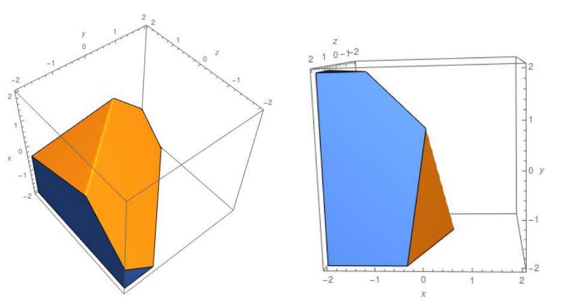
<figcaption class="paper-figure-caption"><b>Fig 1.</b> Figure 1: The polyhedron defined by (7). Figure 2: Its projection onto the x–y plane, obtained by eliminating z.</figcaption>
</figure>
<figure class="paper-figure-card">
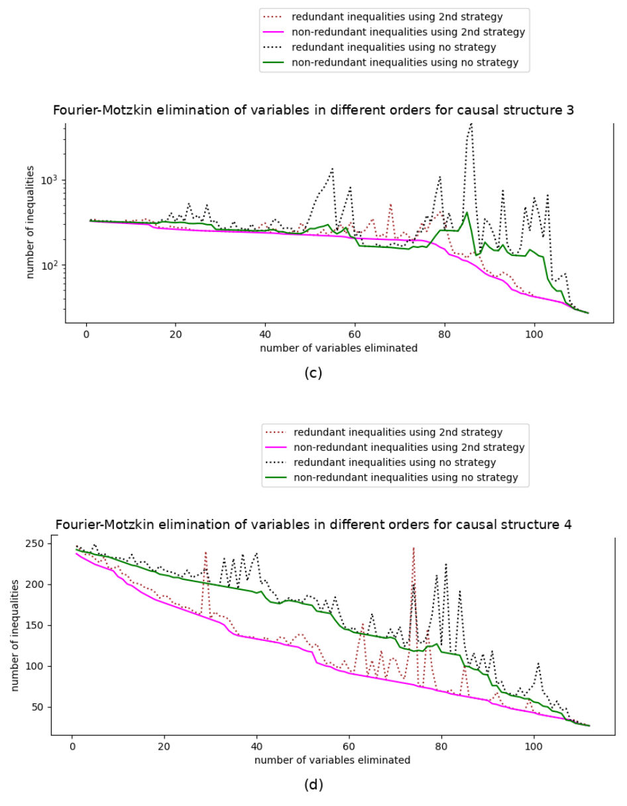
<figcaption class="paper-figure-caption"><b>Fig 2.</b> Figure 3: Number of redundant inequalities produced and number of non-redundant inequalities retained at each elimination step, for four systems arising from causal structures, under the order found by Algorithm 2 and under a fixed order. Panels (a)–(d) correspond to the four instances.</figcaption>
</figure>
</div>

<p><strong>Summary.</strong> This paper develops advanced computational techniques to accelerate Fourier-Motzkin elimination, a method for projecting polyhedra described by linear inequalities. By proposing a smart variable elimination order rule, the authors achieve significant speedups over standard methods, making the analysis of complex entropic constraints from causal structures computationally feasible.</p>
<p><strong>Why it may be interesting.</strong> While the core topic is computational geometry/optimization, the application to entropic constraints derived from causal structures has implications for quantum information theory by providing tools to analyze marginalization over latent variables in complex physical models.</p>
<details>
<summary>Detailed structure</summary>
<p><strong>Main problem.</strong> The paper addresses the computational bottleneck of Fourier-Motzkin (FM) elimination, which is used to find the inequality description of the projection of a polyhedron onto a subset of its coordinates.</p>
<p><strong>Main result.</strong> A novel variable elimination order rule was proposed that significantly reduces the running time (by factors of 6 to 25) compared to fixed-order elimination, especially for large systems arising from entropic constraints.</p>
<p><strong>Method.</strong> The authors analyze redundancy removal techniques (LP testing vs. Imbert's test) and propose a look-ahead rule for selecting the variable elimination order to minimize the number of intermediate inequalities.</p>
<p><strong>Model / system.</strong> The mathematical framework involves polyhedra defined by linear inequalities, with specific applications to obtaining entropic constraints derived from causal structures via marginalization over latent variables.</p>
<p><strong>Key observables.</strong> The number of redundant vs. non-redundant inequalities retained at each step, and the wall-clock running time of the elimination process.</p>
<p><strong>Important parameters / regimes.</strong> The number of variables and the number of inequalities in the initial system (e.g., &gt;100 variables, &gt;250 inequalities for causal structures).</p>
<p><strong>Assumptions / limitations.</strong> The analysis relies on the assumption that the projection is full-dimensional for some results, and it notes that the optimal ordering problem is analogous to an NP-complete problem.</p>
<p><strong>Figures summary.</strong> Figures illustrate the projection of a polyhedron in 3D and the comparison of inequality counts and running times between fixed-order and look-ahead elimination strategies for causal structure instances.</p>
<p><strong>Paper structure.</strong> The paper first establishes the mathematical background of FM elimination and redundancy testing, then details the flaws in combining these tests, and finally proposes and analyzes the variable elimination order rule using random polytopes and large causal structure examples.</p>
</details>
<details>
<summary>Abstract</summary>
<p>Fourier-Motzkin elimination computes an inequality description of the projection of a polyhedron onto a subset of its coordinates by eliminating one variable at a time. It is used in several areas of optimisation and computer science, and it is a standard way of obtaining the entropic constraints of a causal structure, where the marginalisation over the latent variables produces such a projection. Its limitation is the growth of the intermediate systems of inequalities, which can be doubly exponential in the number of eliminated variables even though the projection itself grows only as a single exponential. In practice the computational overload of the method therefore depends on two choices: how the redundant inequalities are removed after each step, and the order in which the variables are eliminated. We consider both. We first show, by an explicit example, that Imbert's redundancy test cannot be interleaved with redundancy removal by linear programming. We show that the two methods, however, can be combined soundly if the derivation records used by Imbert's test are re-initialised after every step at which linear programming is used. We then propose a rule for choosing the elimination order of the variables that gives a significant computational advantage, however, at the cost of increased resource usage. We demonstrate this advantage on some random polytopes, where the rule reduces the running time by factors of between 6 and 25 compared with the same elimination under a fixed order. For entropic descriptions of causal structures, with more than 250 inequalities and more than 100 variables to eliminate, our rule keeps the number of inequalities handled at each step one to two orders of magnitude lower than a fixed order.</p>
</details>
<p><sub><a href="#top">↑ back to top</a></sub></p>

<p><a id="paper-2609.08170"></a></p>
<h3 id="classical-active-space-hybrid-quantum-subspace-expansion-cash-qse-quantum-corrections-without-remeasuring-the-classically-calculable-energy"><a href="http://arxiv.org/abs/2609.08170v1">Classical Active-Space Hybrid Quantum Subspace Expansion (CASH-QSE): Quantum Corrections without Remeasuring the Classically Calculable Energy</a></h3>
<p><strong>Authors:</strong> Artur F. Izmaylov<br>
<strong>Type:</strong> theory · <strong>Category:</strong> strongly correlated electrons · <strong>PDF:</strong> <a href="https://arxiv.org/pdf/2609.08170v1">https://arxiv.org/pdf/2609.08170v1</a><br>
<strong>Analysis basis:</strong> full PDF text, analyzed in chunks
<strong>Topic relevance:</strong> <code>quantum measurements</code> <strong>1/5</strong></p>
<div class="figure-strip-hint">↔ Scroll figures horizontally</div>
<div class="paper-figures-scroll">
<figure class="paper-figure-card">
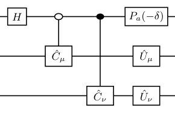
<figcaption class="paper-figure-caption"><b>Fig 1.</b> FIG. 1. Two-register extended-swap circuit for off-diagonal CASH-QSE matrix elements. The ancilla selects the seed/occupation preparation on register A or B. The ansatz circuits need not be controlled because the logical idle state |0n⟩is verified to be invariant under the executed tapered ansatz circuits up to phase. The ancilla gate Pa(−δ) compensates any difference between the two idle-state phases and is omitted when that difference is zero modulo 2π. The CSWAP network maps both branches onto register A, where ancilla X/Y and system-Pauli measurements recover the real and imaginary transition components.</figcaption>
</figure>
</div>

<p><strong>Summary.</strong> This paper introduces CASH-QSE, a novel quantum algorithm for electronic structure calculations that separates the energy calculation into a classically solvable active-space component and a quantum-corrected component. By enforcing orthogonality and solving the problem via a generalized eigenvalue problem, it achieves chemical accuracy with significantly reduced quantum circuit depth and sampling requirements compared to existing VQE methods.</p>
<p><strong>Why it may be interesting.</strong> This work provides a sophisticated, resource-aware quantum algorithm for quantum chemistry, directly addressing the resource scaling and measurement overhead that limits the application of VQE to strongly correlated systems, which is a major focus in AMO physics.</p>
<details>
<summary>Detailed structure</summary>
<p><strong>Main problem.</strong> The paper addresses the bottleneck in Variational Quantum Eigensolver (VQE) methods by developing a way to calculate quantum corrections to electronic energies without re-measuring the energy contribution already determined by a classical reference state.</p>
<p><strong>Main result.</strong> The proposed CASH-QSE method achieves chemical accuracy while keeping the largest required quantum circuits manageable (a few hundred CNOT gates) and significantly reducing the required sampling cost compared to standard VQE approaches.</p>
<p><strong>Method.</strong> CASH-QSE expands the wave function as a combination of a classically calculated Active-Space (CAS) reference state and orthogonal quantum states constructed in the remaining correlation subspace. The energy is then solved via a generalized, non-overlapping Hermitian eigenvalue problem.</p>
<p><strong>Model / system.</strong> The method is applied to electronic structure calculations for small molecules, specifically $  ext{H}_2    ext{O}$ and $   ext{N}_2$, across bond-stretching coordinates. The formalism relies on partitioning the Hilbert space into a classically tractable CAS subspace and orthogonal quantum subspaces.</p>
<p><strong>Key observables.</strong> Energy ($E$), CAS coefficients, circuit depth (measured in CNOT gates), and the ratio of required quantum sampling shots (compared to ADAPT-VQE).</p>
<p><strong>Important parameters / regimes.</strong> Chemical accuracy, bond-stretching distances (e.g., 0.96 Å to 3.0 Å for $   ext{H}_2    ext{O}$), and the size of the required quantum circuit (e.g., 70-CNOT network for $ ext{H}_2    ext{O}$).</p>
<p><strong>Assumptions / limitations.</strong> The method assumes the remaining correlation can be exactly decomposed into a set of mutually orthogonal, structurally constrained quantum subspaces, allowing the global energy minimization to be treated as a linear Ritz problem.</p>
<p><strong>Figures summary.</strong> Table VIII compares the required quantum sampling resources (shots) for $  ext{H}_2    ext{O}/ ext{cc-pVDZ}$ at various bond lengths, showing the significant reduction in shots achieved by CASH-QSE relative to ADAPT-VQE.</p>
<p><strong>Paper structure.</strong> The paper introduces the core problem, details the mathematical formalism involving the first-defect decomposition to create an orthogonal basis, describes the iterative optimization procedure involving orbital relaxation and CAS coefficient updates, and concludes with benchmark results on molecular systems.</p>
</details>
<details>
<summary>Abstract</summary>
<p>The wave function prepared by a variational quantum eigensolver (VQE) can contain a substantial classically tractable component, yet its energy contribution is sampled on the quantum device. Representing the wave function as a combination of a classical reference and separately prepared quantum states allows the reference energy to be evaluated without quantum sampling. However, near-linear dependence among these components can amplify measurement errors and destabilize the resulting energy estimate. We introduce Classical Active-Space Hybrid Quantum Subspace Expansion (CASH-QSE), which retains a complete-active-space self-consistent field (CASSCF) reference classically and uses occupation structure to construct quantum states exactly orthogonal to the reference and to one another. The energy follows from an ordinary Hermitian eigenvalue problem without overlap measurements, while the same occupation constraints simplify the measured operators. Using full configuration interaction to guide component selection, we test CASH-QSE along H$_2$O and N$_2$ bond-stretching coordinates spanning weakly to strongly correlated regimes. The benchmarks use STO--3G for both molecules and a restricted cc-pVDZ orbital space for H$_2$O. CASH-QSE reaches chemical accuracy while limiting the largest complete measurement circuits to a few hundred all-to-all logical controlled-NOT gates. In favorable cases, it also reduces the idealized final-energy sampling cost by several orders of magnitude relative to VQE with an adaptive derivative-assembled pseudo-Trotter ansatz (ADAPT-VQE).</p>
</details>
<p><sub><a href="#top">↑ back to top</a></sub></p>

<p><a id="paper-2609.08716"></a></p>
<h3 id="closing-the-loop-non-causal-computation-partial-traces-postselected-entanglement"><a href="http://arxiv.org/abs/2609.08716v1">Closing the Loop: Non-Causal Computation, Partial Traces, &amp; Postselected Entanglement</a></h3>
<p><strong>Authors:</strong> Mark Carney<br>
<strong>Type:</strong> theory · <strong>Category:</strong> quantum information and computing · <strong>PDF:</strong> <a href="https://arxiv.org/pdf/2609.08716v1">https://arxiv.org/pdf/2609.08716v1</a><br>
<strong>Analysis basis:</strong> full PDF text, analyzed in chunks
<strong>Topic relevance:</strong> <code>quantum measurements</code> <strong>1/5</strong></p>
<div class="figure-strip-hint">↔ Scroll figures horizontally</div>
<div class="paper-figures-scroll">
<figure class="paper-figure-card">
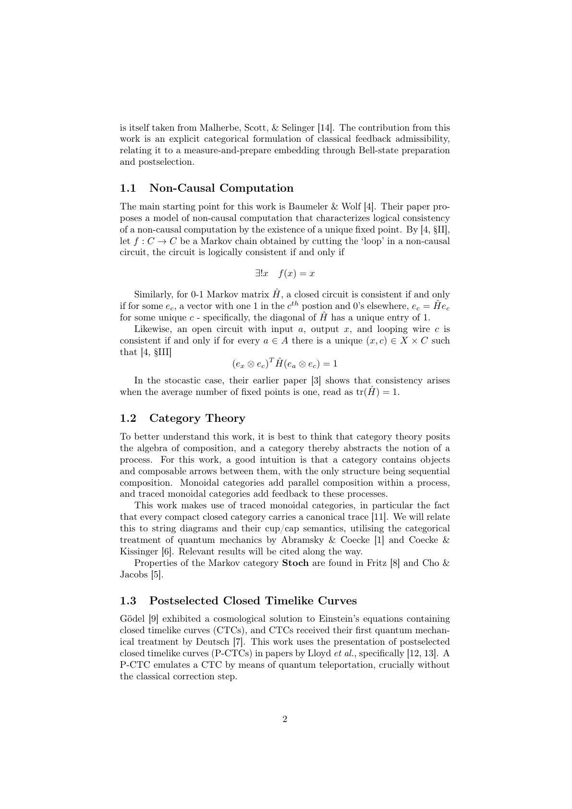
<figcaption class="paper-figure-caption"><b>Fig 1.</b> Low-resolution page preview, page 2</figcaption>
</figure>
<figure class="paper-figure-card">
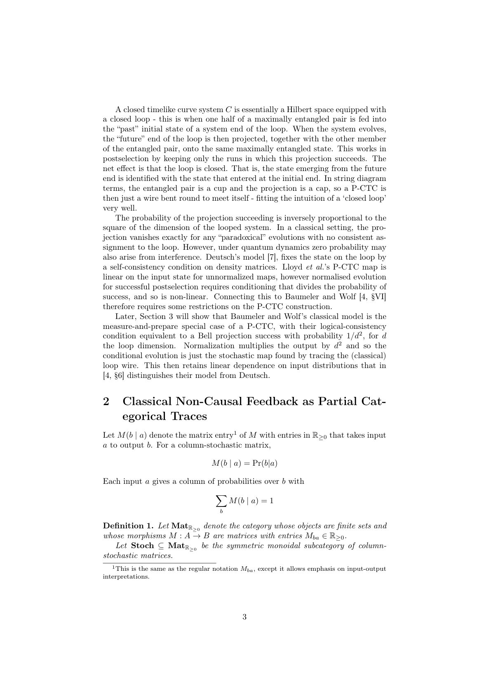
<figcaption class="paper-figure-caption"><b>Fig 2.</b> Low-resolution page preview, page 3</figcaption>
</figure>
<figure class="paper-figure-card">
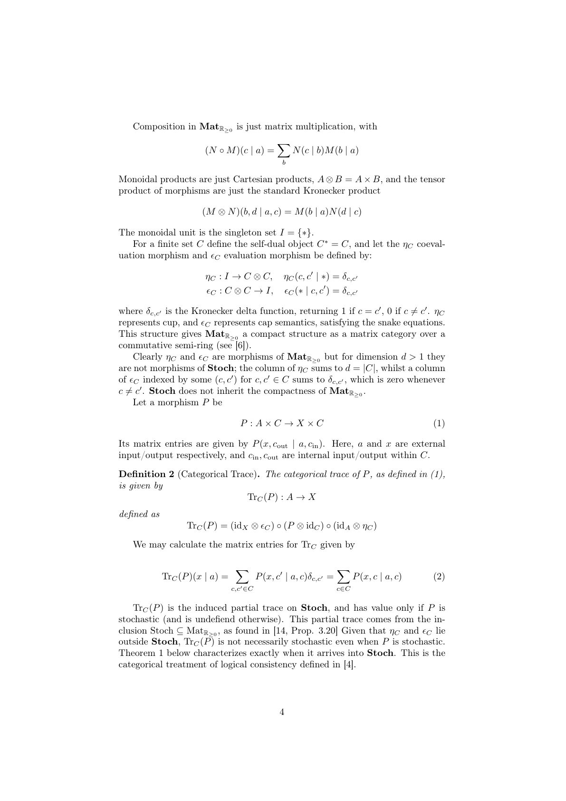
<figcaption class="paper-figure-caption"><b>Fig 3.</b> Low-resolution page preview, page 4</figcaption>
</figure>
<figure class="paper-figure-card">
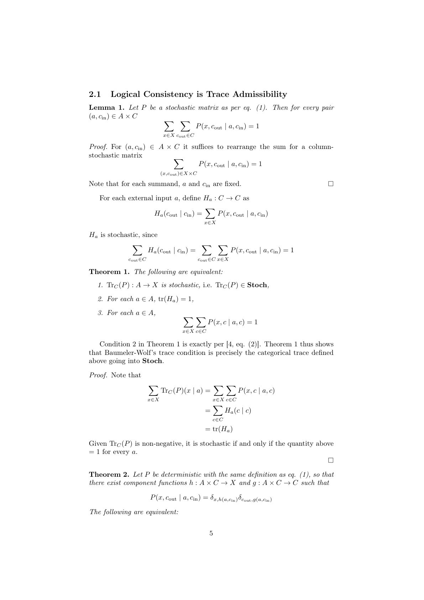
<figcaption class="paper-figure-caption"><b>Fig 4.</b> Low-resolution page preview, page 5</figcaption>
</figure>
<figure class="paper-figure-card">
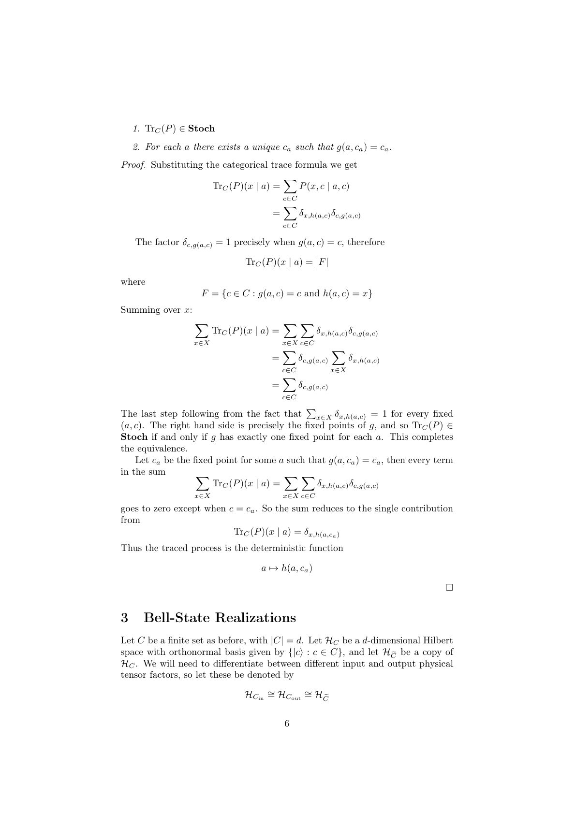
<figcaption class="paper-figure-caption"><b>Fig 5.</b> Low-resolution page preview, page 6</figcaption>
</figure>
</div>

<p><strong>Summary.</strong> This paper mathematically interprets non-causal quantum computation using category theory, linking it to postselected quantum teleportation. It proves that the logical consistency of these circuits is equivalent to specific trace conditions on the underlying process matrices. Ultimately, it shows this consistency manifests physically as a uniform probability distribution ($1/d^2$) in the postselected Bell measurement outcomes.</p>
<p><strong>Why it may be interesting.</strong> The work provides deep mathematical tools (category theory) to analyze the fundamental constraints of causality and information flow in quantum computation, which is highly relevant for understanding resource theories and computational limits.</p>
<details>
<summary>Detailed structure</summary>
<p><strong>Main problem.</strong> The paper aims to provide a rigorous categorical interpretation of non-causal quantum computation models, specifically connecting them to the physical process of postselected quantum teleportation.</p>
<p><strong>Main result.</strong> It establishes that classical logical consistency in these non-causal circuits is mathematically equivalent to the postselected Bell outcome having a uniform probability of $1/d^2$ for all classical inputs.</p>
<p><strong>Method.</strong> The authors employ a categorical framework using traced monoidal categories ($  ext{MatR}^{\ge 0}$) to define and analyze the process's consistency conditions.</p>
<p><strong>Model / system.</strong> The model involves non-causal circuits, which are analyzed via a categorical trace operation ($ ext{Tr}_C(P)$) applied to a stochastic map $P$. This is physically mapped onto a process involving postselection on a maximally entangled Bell state.</p>
<p><strong>Key observables.</strong> The stochastic nature of the traced process ($ ext{Tr}_C(P) \in    ext{Stoch}$), the trace of the induced loop transition matrix ($   ext{tr}(H_a) = 1$), and the probability of the postselected Bell outcome ($1/d^2$).</p>
<p><strong>Important parameters / regimes.</strong> The loop dimension $d = |C|$, which dictates the required probability $1/d^2$ for classical consistency.</p>
<p><strong>Assumptions / limitations.</strong> The analysis assumes the process $P$ is stochastic for the trace to be well-defined in the context of the category $ ext{Stoch}$.</p>
<p><strong>Paper structure.</strong> The paper develops the categorical framework, proves the equivalence between the categorical trace being stochastic and the loop transition matrix having trace 1 (Theorem 1), and then extends this to show the equivalence between this condition and the specific probability distribution arising from postselected Bell measurements (Theorem 3).</p>
</details>
<details>
<summary>Abstract</summary>
<p>This paper gives a categorical interpretation of Baumeler \&amp; Wolf's logically consistent non-causal circuits, connecting them to postselected quantum teleportation. Looped feedback is represented by a trace in the category of non-negative matrices, and it is shown that the traced process is stochastic precisely when the induced loop transition matrix has trace $1$ for every external input, a condition shown to be equivalent to a unique fixed point for the loop for each input to a deterministic circuit. A classical non-causal circuit is represented by a measure-and-prepare quantum channel with an internal register utilising a maximally entangled Bell-state with postselection. The main result is that classical logical consistency is equivalent to the postselected Bell outcome having, for loop dimension $d$, probability exactly $1/d^2$ for each classical input distribution. The subsequent normalised conditional output then agrees exactly with the classical categorical trace. This work identifies a class of quantum Bell-postselection constructions whose conditional evolution maintains linear dependence on classical input distributions.</p>
</details>
<p><sub><a href="#top">↑ back to top</a></sub></p>

<p><a id="paper-2609.08864"></a></p>
<h3 id="distributed-quantum-property-testing-with-quantum-carrier-pigeons"><a href="http://arxiv.org/abs/2609.08864v1">Distributed Quantum Property Testing with Quantum Carrier Pigeons</a></h3>
<p><strong>Authors:</strong> Kenny Chen, Mina Doosti, Ryan Sweke, Chirag Wadhwa<br>
<strong>Type:</strong> theory · <strong>Category:</strong> quantum information and computing · <strong>PDF:</strong> <a href="https://arxiv.org/pdf/2609.08864v1">https://arxiv.org/pdf/2609.08864v1</a><br>
<strong>Analysis basis:</strong> full PDF text, analyzed in chunks
<strong>Topic relevance:</strong> <code>quantum measurements</code> <strong>1/5</strong></p>
<div class="figure-strip-hint">↔ Scroll figures horizontally</div>
<div class="paper-figures-scroll">
<figure class="paper-figure-card">
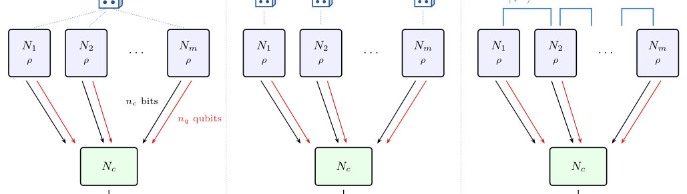
<figcaption class="paper-figure-caption"><b>Fig 1.</b> Figure 1: An illustration of the (𝑛𝑐, 𝑛𝑞, 𝑅, 𝐸) model for distributed quantum inference, as per Definition 1.1. Each distributed node {𝑁𝑖}𝑖∈[𝑚] holds a single copy of 𝜌and communicates with the central node 𝑁𝑐via a communication channel limited to 𝑛𝑐bits and 𝑛𝑞qubits. The central node should output a valid solution to the inference problem (eg “Accept” or “Reject” in the case of property testing, or a valid hypothesis in the case of learning). We use 𝑅∈ {public, private} to distinguish between the public and private coin setting (illustrated in panels (a) and (b) respectively), and 𝐸to denote the number of Bell pairs shared between each neighbouring distributed node. In this work we focus...</figcaption>
</figure>
</div>

<p><strong>Summary.</strong> This paper develops a general framework for distributed quantum inference, focusing on certifying unknown quantum states under strict communication limitations. It rigorously characterizes the required quantum resources, proving that shared randomness is crucial for achieving optimal complexity in state certification. The results establish fundamental limits for distributed quantum computation protocols.</p>
<p><strong>Why it may be interesting.</strong> The rigorous characterization of resource trade-offs (e.g., quantum vs. classical communication, public vs. private randomness) in distributed quantum tasks provides fundamental limits for quantum networking and distributed quantum computation protocols.</p>
<details>
<summary>Detailed structure</summary>
<p><strong>Main problem.</strong> The paper addresses distributed quantum inference, specifically characterizing the complexity of quantum state certification—determining if an unknown state $
ho$ equals a target state $\sigma$ or if they are far apart—under communication constraints.</p>
<p><strong>Main result.</strong> It establishes the copy complexity for state certification, showing that shared randomness is necessary for optimal performance, and developing near-optimal private-coin algorithms matching the lower bounds.</p>
<p><strong>Method.</strong> The work uses information-theoretic techniques to derive both upper bounds (algorithms) and lower bounds (proofs) on the required quantum resources (copy complexity) for the certification task.</p>
<p><strong>Model / system.</strong> The model is the $(n_c, n_q, R, E)$-model for distributed quantum inference, where $m$ nodes each hold a copy of $
ho$ and communicate with a central node $N_c$ via limited classical bits ($n_c$) and qubits ($n_q$).</p>
<p><strong>Key observables.</strong> Copy complexity, trace distance ($\|
ho - \sigma\|_1$), and the success probability of the certification test.</p>
<p><strong>Important parameters / regimes.</strong> Dimension $d$, error threshold $\epsilon$, communication limits $n_c$ and $n_q$, and the randomness source $R$ (public vs. private).</p>
<p><strong>Assumptions / limitations.</strong> The analysis focuses on the case where there is no communication allowed between the distributed nodes themselves, only one-way communication to the central node.</p>
<p><strong>Figures summary.</strong> Figure 1 illustrates the $(n_c, n_q, R, E)$ model, detailing the information flow from distributed nodes to the central node under different randomness and entanglement assumptions.</p>
<p><strong>Paper structure.</strong> The paper first defines the general framework and the specific state certification problem. It then derives complexity bounds for the public-coin and private-coin settings, establishing the necessity of shared randomness, and concludes by presenting near-optimal algorithms.</p>
</details>
<details>
<summary>Abstract</summary>
<p>We introduce a framework for distributed quantum inference under communication constraints. In our model, $m$ distributed nodes each receive one copy of an unknown $d$-dimensional quantum state $ρ$, before communicating via a constrained one-way communication channel with a central node, which aims to infer some property of $ρ$. This framework generalizes the classical distributed inference framework introduced by Acharya, Canonne, and Tyagi [COLT 2019], by allowing quantum resources such as quantum communication and shared entanglement.   Within this setting, we focus on the fundamental problem of quantum state certification: Given a complete description of some state $σ$, decide whether $ρ=σ$ or $\|ρ-σ\|_1\geq ε$. Additionally, we focus on the case of limited communication between distributed nodes and the central node: we assume each communication channel is limited to only $n_c$ bits and $n_q$ qubits with $n_c + n_q \leq \log d$. When all nodes can make use of a shared source of randomness, we show that the copy complexity of distributed state certification is $Θ(\frac{d^2}{2^{n_q} 2^{n_c/2}ε^2})$. We further demonstrate that shared randomness is necessary to achieve the above complexity, by proving an $Ω(\frac{d^3}{4^{n_q} 2^{n_c} ε^2})$ lower bound in the $\textit{private-coin}$ setting. Moreover, we develop a private-coin algorithm that matches this bound up to a $\sqrt{\log d}$ factor, showing this complexity is near-optimal. Together, our work establishes a general framework for distributed quantum inference with communication constraints and characterizes the complexity of distributed state certification with limited communication.</p>
</details>
<p><sub><a href="#top">↑ back to top</a></sub></p>

<p><a id="paper-2609.09065"></a></p>
<h3 id="divergent-orbital-diamagnetism-from-chiral-edge-states-in-chern-insulators"><a href="http://arxiv.org/abs/2609.09065v1">Divergent Orbital Diamagnetism from Chiral Edge States in Chern Insulators</a></h3>
<p><strong>Authors:</strong> Nobuyuki Okuma<br>
<strong>Type:</strong> theory · <strong>Category:</strong> disordered systems and neural networks · <strong>PDF:</strong> <a href="https://arxiv.org/pdf/2609.09065v1">https://arxiv.org/pdf/2609.09065v1</a><br>
<strong>Analysis basis:</strong> full PDF text, analyzed in chunks
<strong>Topic relevance:</strong> <code>analog quantum simulation</code> <strong>1/5</strong></p>
<div class="figure-strip-hint">↔ Scroll figures horizontally</div>
<div class="paper-figures-scroll">
<figure class="paper-figure-card">
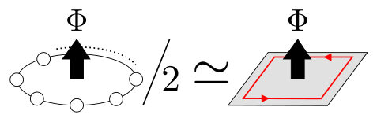
<figcaption class="paper-figure-caption"><b>Fig 1.</b> FIG. 1. Schematic correspondence between a one-dimensional ring and a Chern insulator under magnetic flux.</figcaption>
</figure>
<figure class="paper-figure-card">
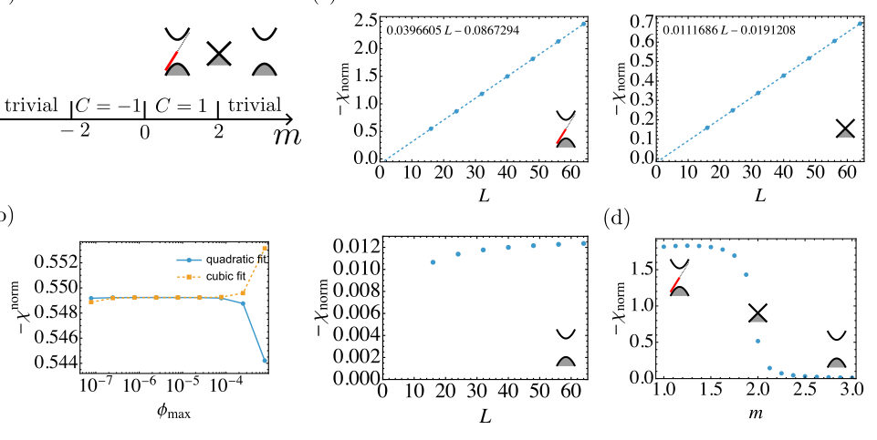
<figcaption class="paper-figure-caption"><b>Fig 2.</b> FIG. 2. (a) Phase diagram of the QWZ model as a function of the mass parameter m, together with schematic low-energy dispersions. The phases with 0 &lt; m &lt; 2 and −2 &lt; m &lt; 0 have Chern numbers C = 1 and C = −1, respectively, while |m| &gt; 2 corresponds to topologically trivial phases. The gap closes at m = 0 and ±2. (b) Determination of the orbital susceptibility from the flux dependence of the total energy for m = 1 and L = 16. The values of −χnorm obtained from quadratic and cubic fits are plotted as functions of the maximum flux ϕmax used in the fitting. (c) System-size dependence of −χnorm for m = 1 (Chern insulator), m = 2 (massless Dirac system), and m = 3 (trivial massive Dirac system)....</figcaption>
</figure>
<figure class="paper-figure-card">
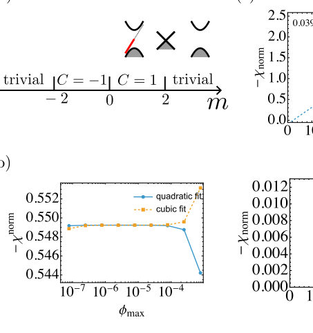
<figcaption class="paper-figure-caption"><b>Fig 3.</b> Figure 2(c) shows the system-size dependence of the normalized orbital susceptibility χnorm for m = 1 (Chern insulator), m = 2 (massless Dirac system), and m = 3 (trivial massive Dirac system). Remarkably, we find that not only the well-known massless Dirac system but also the Chern insulator under open boundary conditions ex- hibits giant diamagnetism, with |χnorm| growing approxi- mately linearly with the system size L. In sharp contrast, for the trivial massive Dirac system, χnorm shows little size dependence for large L and appears to converge to a finite value.</figcaption>
</figure>
<figure class="paper-figure-card">
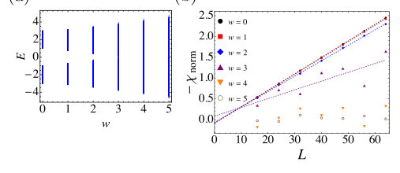
<figcaption class="paper-figure-caption"><b>Fig 4.</b> FIG. 3. (a) Energy spectrum under periodic boundary condi- tions as a function of the disorder strength w for m = 1 and L = 48. The bulk gap closes around w ≃3. (b) System-size dependence of the normalized orbital susceptibility −χnorm for several disorder strengths w. The giant diamagnetic re- sponse approximately linear in L persists in the topological regime and is lost in the strongly disordered regime.</figcaption>
</figure>
<figure class="paper-figure-card">
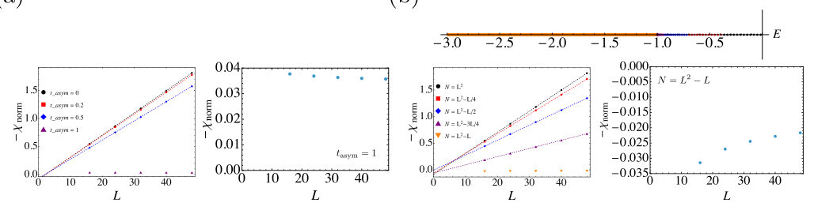
<figcaption class="paper-figure-caption"><b>Fig 5.</b> FIG. 4. System-size dependence of the normalized orbital susceptibility χnorm away from the symmetric half-filled case. (a) χnorm for several values of the band-asymmetry parameter tasym at half filling. For tasym &lt; 1, where the system remains a bulk insulator, the diamagnetic susceptibility diverges linearly with L, whereas the divergence disappears at tasym = 1. (b) χnorm for several values of α, with the particle number set to N = L2 −αL. For α &lt; 1, the Fermi level crosses the edge states and the divergent diamagnetic response persists, whereas at α = 1 the Fermi level reaches the top of the valence band and the susceptibility tends to a finite positive value.</figcaption>
</figure>
</div>

<p><strong>Summary.</strong> This work analyzes the orbital diamagnetism in Chern insulators using lattice models, finding that the susceptibility diverges linearly with system size when open boundary conditions are applied. This giant diamagnetism is robust against disorder and is attributed to the topological nature of the chiral edge states, distinguishing it sharply from the finite response predicted by bulk theory.</p>
<p><strong>Why it may be interesting.</strong> The robust, size-dependent topological response observed here provides a clear, measurable signature (divergent diamagnetism) that distinguishes topological edge physics from bulk properties, which is a key concept in characterizing topological phases.</p>
<details>
<summary>Detailed structure</summary>
<p><strong>Main problem.</strong> The study investigates whether orbital diamagnetism can distinguish between topologically non-trivial (Chern insulator) and trivial massive Dirac insulators, focusing on the role of chiral edge states.</p>
<p><strong>Main result.</strong> Both Chern insulators and massless Dirac systems exhibit giant diamagnetism that scales linearly with system size under open boundary conditions, a feature absent in the bulk calculation or trivial insulators.</p>
<p><strong>Method.</strong> The authors use numerical calculations of the normalized orbital susceptibility derived from the total energy dependence on magnetic flux, comparing open and periodic boundary conditions.</p>
<p><strong>Model / system.</strong> The system is modeled using a lattice massive Dirac Hamiltonian, specifically the Qi–Wu–Zhang (QWZ) model, applied to Chern insulators and related Dirac systems on a square lattice.</p>
<p><strong>Key observables.</strong> Orbital diamagnetic susceptibility ($\chi_{	ext{orb}}$ or $\chi_{	ext{norm}}$), and its scaling with system size ($L$).</p>
<p><strong>Important parameters / regimes.</strong> System size ($L$), magnetic flux ($\phi$), mass term ($m$), and disorder strength ($w$).</p>
<p><strong>Assumptions / limitations.</strong> The analysis assumes zero temperature and fixed particle number, and relies on comparing finite-size calculations (OBC) against bulk formulas (PBC).</p>
<p><strong>Figures summary.</strong> Figures illustrate the phase diagram of the QWZ model, the system-size dependence of $\chi_{	ext{norm}}$ for different mass regimes, and the robustness of the diamagnetism against disorder.</p>
<p><strong>Paper structure.</strong> The paper progresses by establishing the context of divergent diamagnetism in massless Dirac systems, then applying the method to Chern insulators under OBC, contrasting this with PBC results, and finally analyzing the persistence of the divergence under symmetry breaking or changes in filling.</p>
</details>
<details>
<summary>Abstract</summary>
<p>Two-dimensional massless Dirac systems, exemplified by graphene, are known to exhibit a divergent orbital diamagnetic susceptibility that scales linearly with system size. Motivated by viewing a chiral edge state as one half of an enlarged analogue of a benzene ring, we study Chern insulators under open boundary conditions and find the same divergent scaling. This giant diamagnetism is robust against disorder, revealing its topological nature. Our results further suggest a profound connection to the divergent diamagnetism of massless Dirac systems.</p>
</details>
<p><sub><a href="#top">↑ back to top</a></sub></p>

<p><a id="paper-2609.09074"></a></p>
<h3 id="effects-of-interaction-range-on-fluid-multicriticality-a-computational-study-of-an-interconverting-lattice-model"><a href="http://arxiv.org/abs/2609.09074v1">Effects of Interaction Range on Fluid Multicriticality: A Computational Study of an Interconverting Lattice Model</a></h3>
<p><strong>Authors:</strong> Thomas J. Longo, Sergey V. Buldyrev, Frédéric Caupin, Mikhail A. Anisimov<br>
<strong>Type:</strong> both · <strong>Category:</strong> statistical mechanics · <strong>PDF:</strong> <a href="https://arxiv.org/pdf/2609.09074v1">https://arxiv.org/pdf/2609.09074v1</a><br>
<strong>Analysis basis:</strong> full PDF text, analyzed in chunks
<strong>Topic relevance:</strong> <code>analog quantum simulation</code> <strong>1/5</strong></p>
<div class="figure-strip-hint">↔ Scroll figures horizontally</div>
<div class="paper-figures-scroll">
<figure class="paper-figure-card">
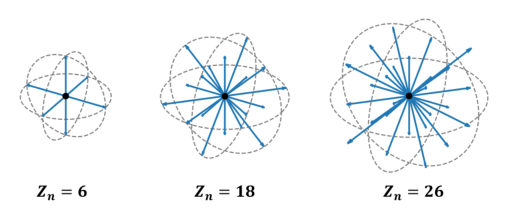
<figcaption class="paper-figure-caption"><b>Fig 1.</b> FIG. 1. Depiction of the range of interactions between a given lattice site and its neighbors for the first three spherical shells of radii: rz = 1 (Zn = 6), rz = √</figcaption>
</figure>
<figure class="paper-figure-card">
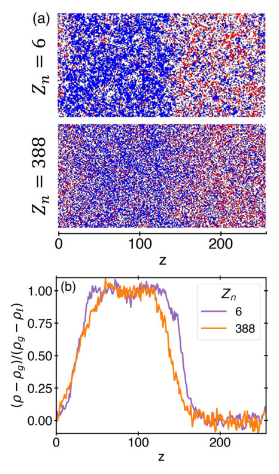
<figcaption class="paper-figure-caption"><b>Fig 2.</b> FIG. 2. Normalized density profiles (scaled by their respective bulk densities) obtained from MC simulations with ¯ω = 1 after 234 el- ementary MC steps, corresponding to approximately 2048 update opportunities per lattice site. Panel (a) shows a representative 2D slice of the simulation configurations in the xz-plane, with sites col- ored in white, blue, and red, if empty or occupied by particles of type 1 or 2, respectively. Panel (b) shows the corresponding density profiles along the z-direction for the smallest (Zn = 6, purple) and largest (Zn = 388, orange) coordination numbers investigated in this work. The profiles correspond to coexistence conditions at ˆT = 0.8 for Zn = 6 and ˆT =...</figcaption>
</figure>
<figure class="paper-figure-card">
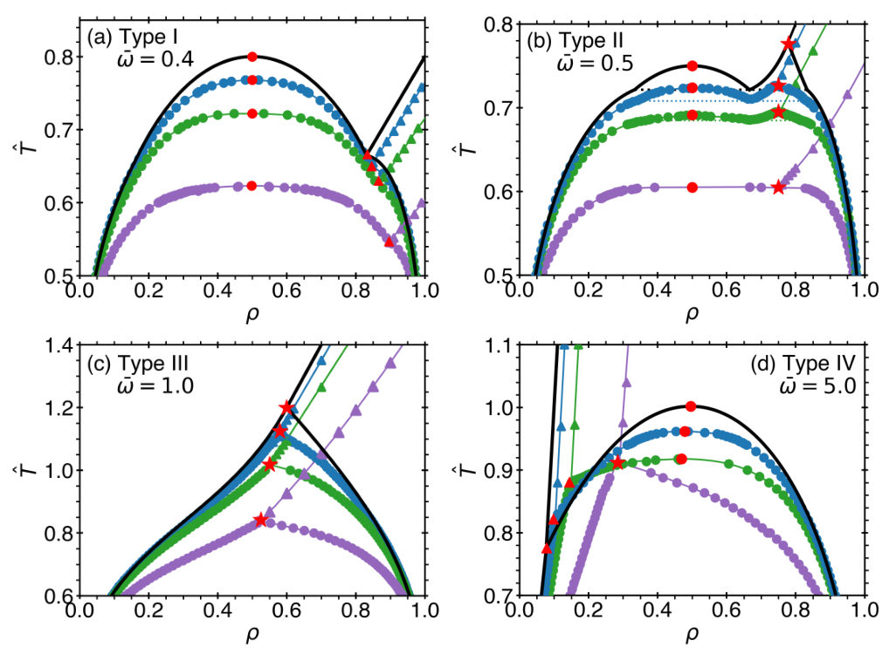
<figcaption class="paper-figure-caption"><b>Fig 3.</b> FIG. 3. Temperature-density phase diagrams illustrating the four critical archetypes (a-d) for three representative coordination numbers: Zn = 6 (purple), Zn = 26 (green), and Zn = 80 (blue), together with the MF theory predictions (black). Note that, for clarity, only these three coordination numbers are shown; additional Zn values considered in this work exhibit the same overall trends, which are considered in more detail in the next Section (IV B). In all panels, circles denote liquid–gas coexistence data, while triangles indicate liquid–liquid second-order phase transition (λ-line) data. The thin curves are provided as guides to the eye. Red symbols identify key thermodynamic points:...</figcaption>
</figure>
<figure class="paper-figure-card">
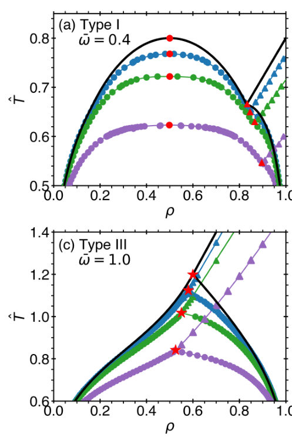
<figcaption class="paper-figure-caption"><b>Fig 4.</b> Figure 3 presents temperature-density phase diagrams, ob- tained from MC simulations for the four critical archetypes at</figcaption>
</figure>
<figure class="paper-figure-card">
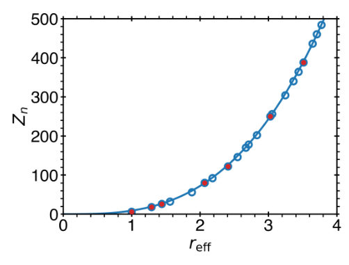
<figcaption class="paper-figure-caption"><b>Fig 5.</b> FIG. 4. Dependence of the number of interacting neighbors, Zn, on the effective interaction radius, reff. The circles show values calcu- lated from Eq. (7), while the solid curve shows the continuum-limit relation Zn = (4π/3)(5/3)3/2r3 eff ≈9.013r3 eff, which follows from the volume of a sphere in the limit Zn →∞. The circles with red centers correspond to the MC simulations considered in this work.</figcaption>
</figure>
</div>

<p><strong>Summary.</strong> This paper computationally studies how the range of molecular interactions influences the critical behavior of a fluid system using an interconverting lattice model. By varying the interaction range, the authors demonstrate that the system's critical points evolve, showing a systematic convergence toward mean-field theory predictions. This work provides a detailed framework for understanding the crossover between short-range and long-range critical phenomena in condensed matter systems.</p>
<p><strong>Why it may be interesting.</strong> While focused on classical statistical mechanics, the study of critical phenomena and phase transitions in lattice models provides foundational insights into how microscopic interactions dictate macroscopic behavior, which underpins many quantum many-body theories.</p>
<details>
<summary>Detailed structure</summary>
<p><strong>Main problem.</strong> The study investigates how varying the range of intermolecular interactions affects the nature of fluid multicriticality.</p>
<p><strong>Main result.</strong> The system exhibits a clear convergence of simulation results toward mean-field predictions as the interaction range increases, revealing different critical archetypes depending on the interaction range.</p>
<p><strong>Method.</strong> The research employs both mean-field theory analysis and extensive three-dimensional Monte Carlo simulations.</p>
<p><strong>Model / system.</strong> The model is an interconverting lattice model (DBC model) designed to exhibit both Ising-like liquid-gas criticality and symmetric fluid tricriticality. The Hamiltonian includes terms for intermolecular interactions and interconversion energy.</p>
<p><strong>Key observables.</strong> Phase coexistence, critical exponents, phase diagrams (showing LGCP, $\lambda$-EP, and TCP), and density/composition profiles.</p>
<p><strong>Important parameters / regimes.</strong> The primary variable is the interaction range, controlled by the number of interacting neighbors ($Z_n$), which is systematically varied from 6 to 388.</p>
<p><strong>Assumptions / limitations.</strong> The analysis often focuses on the degenerate case ($ ilde{e} =   ilde{s} = 0$), and the mean-field theory is known to be exact only in the infinite range limit.</p>
<p><strong>Figures summary.</strong> Figures compare phase diagrams and coexistence lines for different $Z_n$ values against mean-field predictions, showing convergence as $Z_n$ increases.</p>
<p><strong>Paper structure.</strong> The paper establishes the physical model and the role of interaction range, details the simulation methodology (MC moves, observables), presents results showing the dependence of critical behavior on $Z_n$, and concludes by comparing findings to theoretical limits.</p>
</details>
<details>
<summary>Abstract</summary>
<p>The range of intermolecular interactions plays a central role in determining the nature of phase behavior and critical phenomena. It is well established through studies of the Ising model that as interaction range increases, Monte Carlo simulations progressively approach meanfield predictions as the effects of critical fluctuations are suppressed. In this work, we investigate how varying interaction range influences fluid multicriticality using an interconverting lattice model that exhibits both Ising-like liquid-gas criticality and symmetric fluid tricriticality (similar to that in the superfluid $^4$He-$^3$He mixture). This minimal model serves as a representative system for exploring the evolution of competing critical points within a generic framework. We analyze the model using both meanfield theory and three-dimensional Monte Carlo simulations while systematically varying the number of interacting neighbors, $Z_n$, from 6 to 388. We find that the system with nearest-neighbor interactions ($Z_n=6$) reveals only two types of multicritical behavior, while for larger interaction ranges, four distinct archetypes emerge. We demonstrate the convergence of the simulation results to those of the meanfield theory as the number of interacting neighbors tends to infinity, and we discuss the results within the framework of crossover critical phenomena.</p>
</details>
<p><sub><a href="#top">↑ back to top</a></sub></p>

<p><a id="paper-2609.08261"></a></p>
<h3 id="nuclear-slowing-down-factors-in-alkali-metal-vapors"><a href="http://arxiv.org/abs/2609.08261v1">Nuclear slowing-down factors in alkali-metal vapors</a></h3>
<p><strong>Authors:</strong> Vasiliki Koutrouli, Georgios Vasilakis, Kostas Mouloudakis<br>
<strong>Type:</strong> theory · <strong>Category:</strong> other · <strong>PDF:</strong> <a href="https://arxiv.org/pdf/2609.08261v1">https://arxiv.org/pdf/2609.08261v1</a><br>
<strong>Analysis basis:</strong> full PDF text, analyzed in chunks
<strong>Topic relevance:</strong> <code>quantum measurements</code> <strong>1/5</strong></p>
<div class="figure-strip-hint">↔ Scroll figures horizontally</div>
<div class="paper-figures-scroll">
<figure class="paper-figure-card">
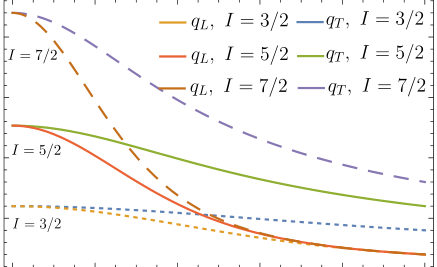
<figcaption class="paper-figure-caption"><b>Fig 1.</b> FIG. 1. Polarization dependence of the longitudinal and transverse nuclear slowing-down factors, qL(p) and qT (p), for nuclear spins I = 3/2, 5/2, and 7/2. The two slowing-down factors coincide in the unpolarized limit (p →0) but differ increasingly at finite polarization, reflecting the distinction between changes in the magnitude and orientation of the spin polarization.</figcaption>
</figure>
<figure class="paper-figure-card">
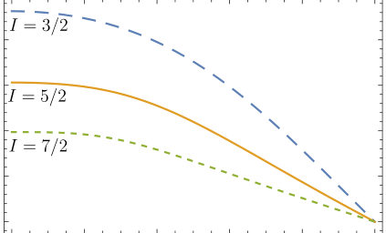
<figcaption class="paper-figure-caption"><b>Fig 2.</b> FIG. 2. Polarization dependence of the quadratic spin- exchange relaxation factor CT (p), for nuclear spins I = 3/2, 5/2, and 7/2.</figcaption>
</figure>
<figure class="paper-figure-card">
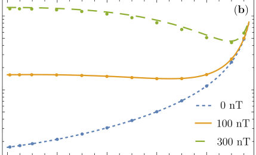
<figcaption class="paper-figure-caption"><b>Fig 3.</b> FIG. 3. (a) Longitudinal and transverse slowing-down fac- tors extracted from the slow eigenvalues of the linearized dynamics obtained from Eq. (C1) (red and orange dashed curves), compared with the analytical expressions (black and gray solid curves), for I = 3/2 and B = 0. (b) Transverse re- laxation rate as a function of the stationary spin polarization p. Colored points show the decay rate of the slow transverse eigenmode, while the solid curves show the analytical predic- tion of Eq. (14), including all contributions through second order in the magnetic field, spin-destruction rate, and optical- pumping rate. The calculation is performed for I = 3/2, with Rse = 105 s−1 and Rsd = 102...</figcaption>
</figure>
<figure class="paper-figure-card">

<figcaption class="paper-figure-caption"><b>Fig 4.</b> FIG. 4. Comparison between the conventional and cor- rected descriptions of the transverse relaxation rate as a function of spin polarization. The blue curve shows the conventional prediction, (Rop + Rsd)/qT (p), while the or- ange curve includes the finite-field spin-exchange contribu- tion CT (p)(γeBz)2/Rse. The green dashed curve instead in- cludes the finite-field spin-exchange correction evaluated us- ing ˜CT (p). The calculation is shown for Bz = 100 nT, Rse = 105 s−1, and Rsd = 102 s−1, with circularly polarized D1 pumping (sph = 1), for which Rop = p Rsd/(1 −p). The inset shows the polarization-dependent critical field Bc(p), at which the quadratic spin-exchange broadening equals...</figcaption>
</figure>
<figure class="paper-figure-card">
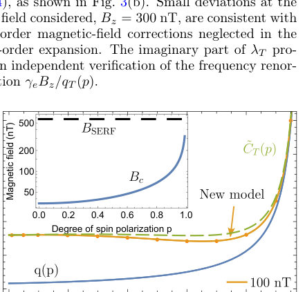
<figcaption class="paper-figure-caption"><b>Fig 5.</b> Figure 4 illustrates the practical consequence of the finite-field correction. The conventional description, which includes only the slowing-down factor qT (p), sub- stantially underestimates the transverse relaxation rate once the quadratic spin-exchange contribution becomes appreciable (blue curve). This occurs even though the applied field remains well below the SERF scale BSERF. In contrast, the model that naively includes ˜CT (p) over- estimates the transverse relaxation rate (green curve).</figcaption>
</figure>
</div>

<p><strong>Summary.</strong> This theoretical work refines the understanding of spin dynamics in alkali-metal vapors by deriving separate slowing-down factors for longitudinal and transverse spin components in the SERF regime. The authors show that standard single-factor models overestimate relaxation rates at high polarization. These findings are vital for improving the accuracy of atomic magnetometers used in fundamental physics measurements.</p>
<p><strong>Why it may be interesting.</strong> It provides a rigorous, quantitative refinement of the effective Bloch description for alkali-metal spin dynamics, which is crucial for accurately modeling high-precision atomic magnetometers and comagnetometers.</p>
<details>
<summary>Detailed structure</summary>
<p><strong>Main problem.</strong> The paper addresses the discrepancy in describing alkali-metal spin dynamics in the SERF regime by analyzing the nuclear slowing-down factors for longitudinal versus transverse spin components.</p>
<p><strong>Main result.</strong> Longitudinal and transverse spin dynamics are governed by distinct slowing-down factors at finite polarization, invalidating the single-factor description used in standard Bloch equations.</p>
<p><strong>Method.</strong> The analysis employs perturbation theory on the linearized density-matrix dynamics, treating the spin-exchange interaction as the unperturbed system.</p>
<p><strong>Model / system.</strong> The system involves alkali-metal vapors undergoing spin-exchange optical pumping (SEOP) in the SERF regime, modeled using the density-matrix formalism and effective Bloch equations.</p>
<p><strong>Key observables.</strong> Longitudinal and transverse spin relaxation rates (1/T1, 1/T2), and the polarization-dependent slowing-down factors ($q_L(p)$ and $q_T(p)$).</p>
<p><strong>Important parameters / regimes.</strong> Electron spin polarization ($p$), magnetic field strength ($B$), and the ratio of various relaxation rates (e.g., $\gamma_e B_z/R_{	ext{se}}$).</p>
<p><strong>Assumptions / limitations.</strong> The analysis assumes an axially symmetric configuration and uses perturbation theory valid to specific orders in small rate ratios.</p>
<p><strong>Figures summary.</strong> The notes reference tables providing explicit, closed-form polynomial expressions for the second-order coefficients ($ ext{S}_{\alphaeta}$) governing the field-dependent corrections to the transverse SERF eigenvalue.</p>
<p><strong>Paper structure.</strong> The paper builds from the general Bloch description to a detailed density-matrix analysis, deriving distinct factors for longitudinal and transverse dynamics, and culminates in calculating the second-order field corrections to the transverse SERF eigenvalue.</p>
</details>
<details>
<summary>Abstract</summary>
<p>Nuclear slowing-down factors account for the sharing of angular momentum between the electron and the nucleus in the effective Bloch description of alkali-metal spin dynamics in the spin-exchange-relaxation-free (SERF) regime. For collinear optical pumping and magnetic field, we find that longitudinal and transverse spin dynamics are characterized by different polarization-dependent slowing-down factors. Transverse dynamics are governed by the conventional factor $q(p)$, with $p$ the electron spin polarization, whereas longitudinal relaxation is governed by $q(p)+p\,dq(p)/dp$. The two factors coincide at zero polarization but differ substantially at high polarization, where the single-factor description overestimates the underlying pumping and relaxation rates inferred from longitudinal transients by factors approaching two to four, depending on the nuclear spin. We further derive closed-form expressions, valid at arbitrary polarization, for the residual spin-exchange relaxation of the transverse spin components at finite magnetic field along the pumping axis. This contribution is quadratic in the magnetic field and can become comparable to the zero-field linewidth at fields well within the SERF regime. The results are obtained by perturbation theory on the density-matrix dynamics linearized around the stationary state and are verified by numerical solutions of the microscopic density-matrix equation. These findings refine the effective Bloch description of alkali-metal spin dynamics and are directly relevant to atomic magnetometers and alkali-metal--noble-gas comagnetometers, including those used in precision searches for physics beyond the Standard Model.</p>
</details>
<p><sub><a href="#top">↑ back to top</a></sub></p>

<p><a id="paper-2609.08467"></a></p>
<h3 id="theory-of-kondo-hybridization-wave-in-kondo-lattice"><a href="http://arxiv.org/abs/2609.08467v1">Theory of Kondo hybridization wave in Kondo lattice</a></h3>
<p><strong>Authors:</strong> Yin Zhong<br>
<strong>Type:</strong> theory · <strong>Category:</strong> strongly correlated electrons · <strong>PDF:</strong> <a href="https://arxiv.org/pdf/2609.08467v1">https://arxiv.org/pdf/2609.08467v1</a><br>
<strong>Analysis basis:</strong> full PDF text, analyzed in chunks
<strong>Topic relevance:</strong> <code>Keldysh / 2PI / non-Gaussian methods</code> <strong>1/5</strong></p>
<div class="figure-strip-hint">↔ Scroll figures horizontally</div>
<div class="paper-figures-scroll">
<figure class="paper-figure-card">
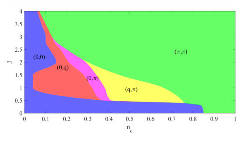
<figcaption class="paper-figure-caption"><b>Fig 1.</b> FIG. 2. The J −nc ground-state phase diagram on square lattice with Q = (Qx, Qy) and q ∈(0, π).</figcaption>
</figure>
<figure class="paper-figure-card">
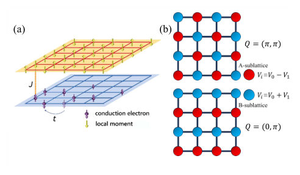
<figcaption class="paper-figure-caption"><b>Fig 2.</b> FIG. 1. (a) The Kondo lattice model defined on square lattice with nearest-neighbor-hopping t and Kondo coupling J. (b) Schematic spatial distribution of Kondo hybridization order parameter Vi = V0 + V1eiQ·Ri with Q = (π, π) and (0, π).</figcaption>
</figure>
<figure class="paper-figure-card">
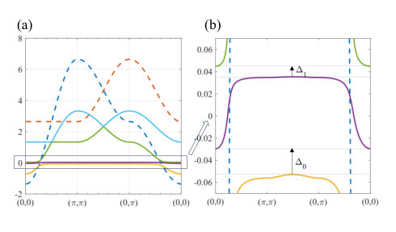
<figcaption class="paper-figure-caption"><b>Fig 3.</b> FIG. 3. (a) The quasi-particle bands (solid line and dashed line corresponds to bare bands εk, εk+Q) along high-symmetry path (0, 0)−(π, π)−(0, π)−(0, 0) and (b) their hybridization gap ∆0, ∆1 for KHW phase with Q = (0, π).</figcaption>
</figure>
<figure class="paper-figure-card">
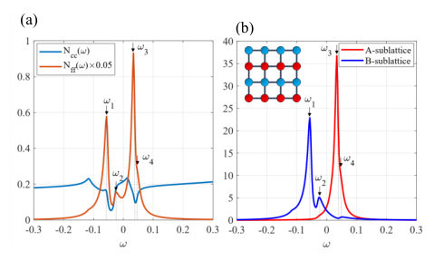
<figcaption class="paper-figure-caption"><b>Fig 4.</b> FIG. 4. (a) The DOS of conduction electron Ncc(ω) and Abrikosov fermion Nff(ω) and (b) LDOS of Abrikosov fermion on A and B sublattice for KHW phase with Q = (0, π).</figcaption>
</figure>
<figure class="paper-figure-card">
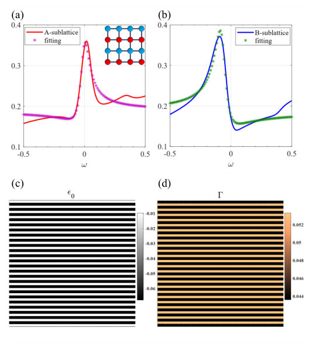
<figcaption class="paper-figure-caption"><b>Fig 5.</b> FIG. 5. (a)(b) The calculated STM spectrum and its fitting for A and B sublattice. (c)(d) The stripe-like spatial distribution of fitting parameters ϵ0 and Γ for KHW with Q = (0, π).</figcaption>
</figure>
</div>

<p><strong>Summary.</strong> This paper develops a mean-field theory for the Kondo lattice to explain the emergence of spatially modulated Kondo hybridization waves (KHW). By modeling the order parameter with a wavevector $\mathbf{Q}$, the authors predict that the $\mathbf{Q}=(0,\pi)$ phase generates uniaxial stripe modulations and anisotropic conductivity. This provides a unified theoretical foundation for understanding these novel ordered states in heavy fermion materials.</p>
<p><strong>Why it may be interesting.</strong> The work provides a concrete, microscopic theoretical framework connecting abstract many-body physics (Kondo lattice) to specific, measurable experimental signatures (STM modulation, transport anisotropy) in complex correlated materials.</p>
<details>
<summary>Detailed structure</summary>
<p><strong>Main problem.</strong> The paper addresses the experimental observation of spatially modulated Kondo hybridization wave (KHW) order in heavy fermion superconductors, challenging the assumption of uniform hybridization.</p>
<p><strong>Main result.</strong> A microscopic theory successfully predicts the stable $\mathbf{Q}=(0,\pi)$ KHW phase, which yields uniaxial stripe modulation matching STM data in $    ext{UTe}_2$ and $1	ext{T}/1	ext{H-TaS}_2$, and predicts anisotropic transport as a fingerprint.</p>
<p><strong>Method.</strong> The authors developed a theory using the large-$N$ fermionic mean-field approximation applied to the canonical square-lattice Kondo lattice model.</p>
<p><strong>Model / system.</strong> The system is the Kondo lattice model, described by a Hamiltonian involving conduction electrons and local moments. The theory treats the Kondo hybridization order parameter $V_i$ as spatially modulated: $V_i = V_0 + V_1 e^{i\mathbf{Q}\cdot\mathbf{R}_i}$.</p>
<p><strong>Key observables.</strong> Kondo hybridization gap modulation (uniaxial stripe), in-plane conductivity anisotropy ($\sigma_{xx} 
eq \sigma_{yy}$), quasiparticle band structure, and Local Density of States (LDOS).</p>
<p><strong>Important parameters / regimes.</strong> The ordering wavevector $\mathbf{Q}$, the Kondo coupling strength $J$, and the conduction electron filling $n_c$.</p>
<p><strong>Assumptions / limitations.</strong> The primary assumption is the $\mathbf{Q}$-dependent ansatz for the hybridization order parameter $V_i$ and the use of the large-$N$ mean-field approximation.</p>
<p><strong>Figures summary.</strong> Figures illustrate the spatial modulation of the order parameter, the resulting four-band quasiparticle structure for $\mathbf{Q}=(0,\pi)$, and the corresponding DOS/LDOS features.</p>
<p><strong>Paper structure.</strong> The paper develops the mean-field theory for the modulated Kondo lattice, derives the self-consistent equations for the order parameters $V_0$ and $V_1$, maps the ground-state phase diagram, and finally calculates spectroscopic and transport signatures for the key $\mathbf{Q}=(0,\pi)$ phase.</p>
</details>
<details>
<summary>Abstract</summary>
<p>Recent scanning tunneling microscopy experiments have discovered emergent spatially modulated Kondo hybridization wave (KHW) order in the heavy fermion superconductor UTe$_2$ and the artificial Kondo lattice system 1T/1H-TaS$_2$, challenging the conventional paradigm of spatially uniform Kondo hybridization in heavy fermion physics. Here, we develop a microscopic theory for KHW order based on the canonical square-lattice Kondo lattice model within the large-$N$ fermionic mean-field approximation. We systematically identify stable modulated KHW phases and establish their ground-state phase diagram. The prominent $\boldsymbol{Q}=(0,π)$ KHW phase yields uniaxial stripe modulation of the Kondo hybridization gap, which faithfully reproduces the spatial modulation pattern observed in UTe$_2$. Moreover, its inherent unit-cell-doubling modulation precisely accounts for the spectroscopic features measured in 1T/1H-TaS$_2$. We further predict a characteristic in-plane conductivity anisotropy that serves as a definitive transport fingerprint to discriminate KHW states with distinct ordering wavevectors. Our work provides a microscopic foundation for the newly observed KHW order and establishes a unified theoretical framework for understanding emergent modulated hybridization phenomena in heavy fermion materials.</p>
</details>
<p><sub><a href="#top">↑ back to top</a></sub></p>

<p><a id="paper-2609.08146"></a></p>
<h3 id="transport-properties-and-topological-phase-transitions-for-a-creutz-su-schrieffer-heeger-ladder"><a href="http://arxiv.org/abs/2609.08146v1">Transport properties and topological phase transitions for a Creutz-Su-Schrieffer-Heeger ladder</a></h3>
<p><strong>Authors:</strong> K. A. González, S. Bravo, L. Rosales, P. A. Orellana<br>
<strong>Type:</strong> theory · <strong>Category:</strong> other · <strong>PDF:</strong> <a href="https://arxiv.org/pdf/2609.08146v1">https://arxiv.org/pdf/2609.08146v1</a><br>
<strong>Analysis basis:</strong> full PDF text, analyzed in chunks
<strong>Topic relevance:</strong> <code>analog quantum simulation</code> <strong>1/5</strong></p>
<div class="figure-strip-hint">↔ Scroll figures horizontally</div>
<div class="paper-figures-scroll">
<figure class="paper-figure-card">
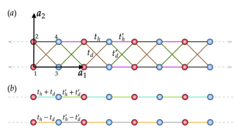
<figcaption class="paper-figure-caption"><b>Fig 1.</b> Figure 1: (a) Real space structure of the Creutz ladder lattice with hopping amplitudes labeling. (b) Representation in terms of effective SSH chains.</figcaption>
</figure>
<figure class="paper-figure-card">
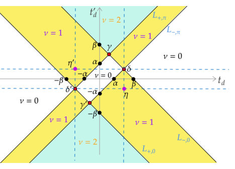
<figcaption class="paper-figure-caption"><b>Fig 2.</b> Figure 2: Two-dimensional projection of the four-dimensional bulk phase diagram for the topological phases of the CSSH ladder. Solid lines represent the gap-closing regions in the spectrum, while dashed lines indicate the flat-band formation conditions. The labels α and β denote points at which, in addition to lying on a topological phase-transition line, one of the intercell hopping parameters vanishes. The labels η and η′ correspond to codimension-2 regions where two flat bands become degenerate. The points (δ, δ′, γ, γ′) indicate parameter values at which simultaneous gap closings occur in momentum space. In addition, (δ, δ′) also correspond to points where two flat bands become...</figcaption>
</figure>
<figure class="paper-figure-card">
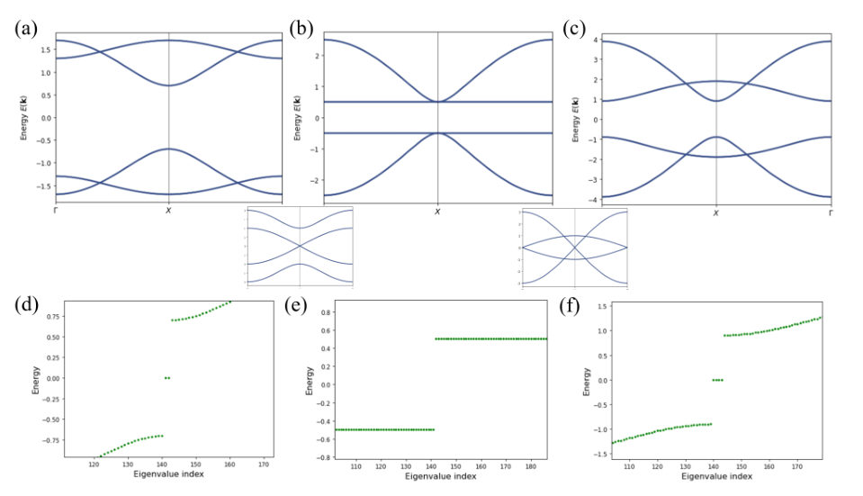
<figcaption class="paper-figure-caption"><b>Fig 3.</b> Figure 3: (a) bulk band structure for a parameter set with th = 1.0, t′ h = 0.5, td = 0.5 and t′ d = −0.7, which corresponds to a ν = 1 phase. (b) bulk band structure for a parameter set with th = 1.0, t′ h = 0.5, td = 0.5 and t′ d = 0.5, which corresponds to a ν = 0 phase. (c) bulk band structure for a parameter set with th = 1.0, t′ h = 0.5, td = 0.5 and t′ d = 1.5, which corresponds to a ν = 2 phase. Panel (d)–(f) represent the energy spectrum of a finite structure at representative points of the three phases, selected according to the phase-diagram criteria discussed in Sec. 2.</figcaption>
</figure>
<figure class="paper-figure-card">
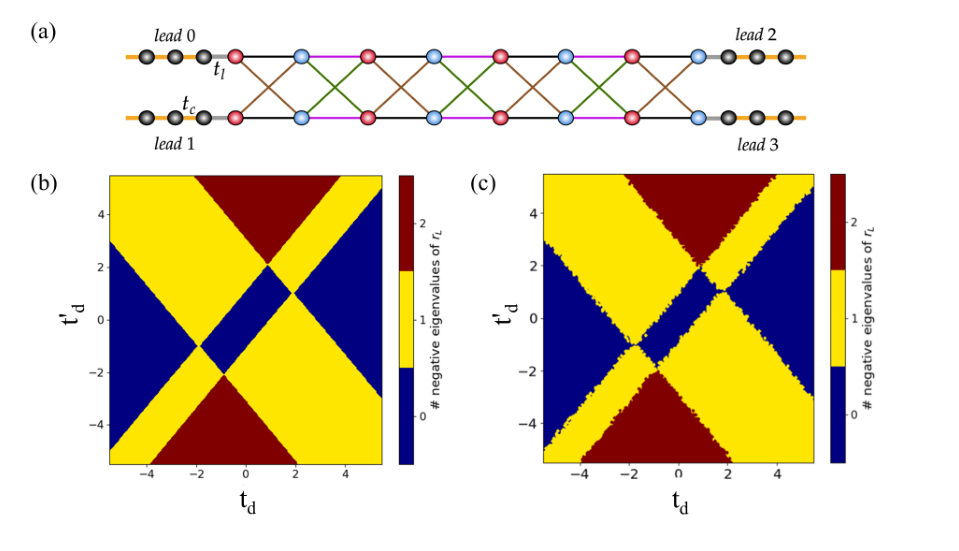
<figcaption class="paper-figure-caption"><b>Fig 4.</b> Figure 4: (a) Transport configuration used for the four-terminal calculations, including the lead labeling. (b) Signature of the eigenvalues of the reflection matrix rL, corresponding to the topological invariant ν, in the projected (td, t′ d) plane for a pristine system, where all hoppings of the same type have equal magnitude. The fixed parameters are th = 1.5 and t′ h = 1. (c) Signature of the eigenvalues of the reflection matrix rL, corresponding to the topological invariant ν, in the projected (td, t′ d) plane for a system with random th hoppings uniformly distributed in the range 1.5 ± 0.2, with fixed t′ h = 1. For both calculations in (b) and (c), the parameter-space grid has size...</figcaption>
</figure>
<figure class="paper-figure-card">
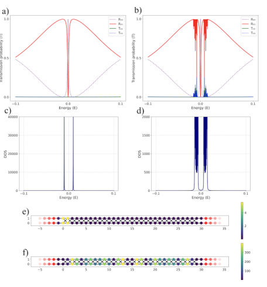
<figcaption class="paper-figure-caption"><b>Fig 5.</b> Figure 6: (a) Transmission probability in the flat band con- dition for th = t′ h = t′ d = 1, td = 1.01. (b) Transmission probability slightly off the flat band condition for th = t′ h = 1, td = 1.01, t′ d = 1.004. (c,d) Density of states for (c) the flat band condition and (d) slightly off the flat band condition. (e,f) Local density of states where the in-signal enters through the lead 0 at E = 0.01 for (e) the flat band condition and (f) slightly off the flat band condition</figcaption>
</figure>
</div>

<p><strong>Summary.</strong> This work analyzes the electronic and topological properties of the CSSH ladder using a tight-binding model. By calculating topological invariants and analyzing electronic transport, the authors demonstrate a fundamental link between the system's topology, the formation of flat bands, and its measurable transport response. This provides a comprehensive theoretical framework for understanding localization and topological transitions in such quantum lattices.</p>
<p><strong>Why it may be interesting.</strong> The strong connection drawn between topological invariants (a bulk property) and measurable transport signatures (a real-space observable) provides a powerful, experimentally relevant diagnostic tool for characterizing topological phases in condensed matter systems.</p>
<details>
<summary>Detailed structure</summary>
<p><strong>Main problem.</strong> The study investigates the interplay between electronic, topological, and transport properties in the Creutz-Su-Schrieffer-Heeger (CSSH) ladder.</p>
<p><strong>Main result.</strong> The research establishes a direct connection showing that topological properties, the formation of flat bands, and electronic transport signatures are intrinsically linked in the CSSH ladder.</p>
<p><strong>Method.</strong> The analysis employs a tight-binding model solved via the Green's function formalism, calculating topological invariants and electronic transmission.</p>
<p><strong>Model / system.</strong> The system is the Creutz-Su-Schrieffer-Heeger (CSSH) ladder, modeled by a tight-binding Hamiltonian exhibiting chiral symmetry and time-reversal symmetry, placing it in the BDI Altland–Zirnbauer class.</p>
<p><strong>Key observables.</strong> Energy spectrum, Local Density of States (LDOS), electronic transmission, and the topological invariant (nu).</p>
<p><strong>Important parameters / regimes.</strong> Hopping parameters ($t_h, t'_h, t_d, t'_d$), and the system's position within the parameter space defining different topological phases.</p>
<p><strong>Assumptions / limitations.</strong> The analysis assumes the preservation of global BDI symmetries for the stability of the topological invariant and initially focuses on the absence of a magnetic field.</p>
<p><strong>Figures summary.</strong> Figures illustrate the real-space structure, the evolution of the band structure through different topological phases ($
u=0, 1, 2$), and the signature of reflection matrix eigenvalues in the parameter space.</p>
<p><strong>Paper structure.</strong> The paper proceeds by first defining the model and calculating the topological invariant, then mapping out the phase diagram using gap-closing conditions, and finally confirming the results by analyzing electronic transport and the emergence of Bound States in the Continuum (BICs).</p>
</details>
<details>
<summary>Abstract</summary>
<p>In this work, we investigate the electronic, topological, and transport properties of a Creutz-Su-Schrieffer-Heeger (CSSH) ladder. Using a tight-binding model within the Green's function formalism, we calculate the energy spectrum, local density of states (LDOS), and electronic transmission. We first determine the energy spectrum of the CSSH ladder and analyze the different topological phases present in the system, identifying one trivial phase and three distinct nontrivial regions. We then study electronic transport and show that the transmission reproduces the different topological phases through characteristic transport signatures. Finally, we derive the conditions for the emergence of non-topological flat bands and demonstrate that these bands also provide the necessary conditions for the formation of bound states in the continuum (BICs). Our results establish a direct connection between the topological properties, flat-band formation, and electronic transport in the CSSH ladder.</p>
</details>
<p><sub><a href="#top">↑ back to top</a></sub></p>

<p><a id="paper-2609.07841"></a></p>
<h3 id="truncated-polyakov-bootstrap-for-bcfts-neumann-dirichlet-flow-and-ising-special-transition"><a href="http://arxiv.org/abs/2609.07841v1">Truncated Polyakov bootstrap for BCFTs: Neumann-Dirichlet flow and Ising special transition</a></h3>
<p><strong>Authors:</strong> Kaushik Kangsabanik, Apratim Kaviraj, Astha Tiwari<br>
<strong>Type:</strong> theory · <strong>Category:</strong> statistical mechanics · <strong>PDF:</strong> <a href="https://arxiv.org/pdf/2609.07841v1">https://arxiv.org/pdf/2609.07841v1</a><br>
<strong>Analysis basis:</strong> full PDF text, analyzed in chunks
<strong>Topic relevance:</strong> <code>Keldysh / 2PI / non-Gaussian methods</code> <strong>1/5</strong></p>
<div class="figure-strip-hint">↔ Scroll figures horizontally</div>
<div class="paper-figures-scroll">
<figure class="paper-figure-card">
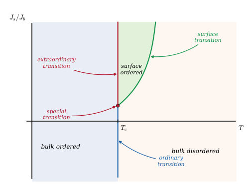
<figcaption class="paper-figure-caption"><b>Fig 1.</b> FIG. 1: Phase diagram of 3d Ising with a boundary</figcaption>
</figure>
<figure class="paper-figure-card">
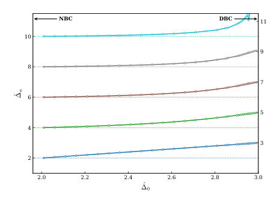
<figcaption class="paper-figure-caption"><b>Fig 2.</b> FIG. 2: Solid lines: Flow of boundary operator dimensions ˆ∆n (n = 0, 1, 2, 3, 4) as a function of ˆ∆0. Dotted lines: GFF with Neumann boundary condition (NBC). On the right spectrum approaches that of Dirichlet boundary condition (DBC), ˆ∆n = ∆+ 2n + 1.</figcaption>
</figure>
<figure class="paper-figure-card">
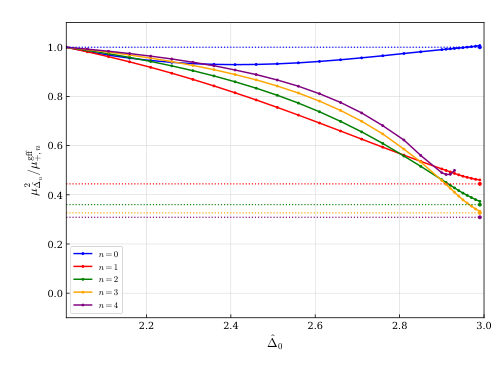
<figcaption class="paper-figure-caption"><b>Fig 3.</b> FIG. 3: Solid lines: flow of µ2 ˆ∆n/µgff +,n vs. ˆ∆0 (the n = 4</figcaption>
</figure>
<figure class="paper-figure-card">
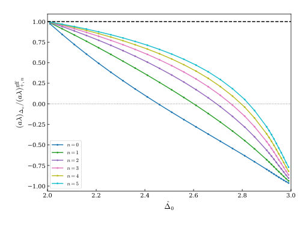
<figcaption class="paper-figure-caption"><b>Fig 4.</b> FIG. 4: Flow of (aλ)∆n/(aλ)gff +,n vs. ˆ∆0. For DBC (aλ)gff −,n/(aλ)gff +,n = −1 from (12).</figcaption>
</figure>
<figure class="paper-figure-card">
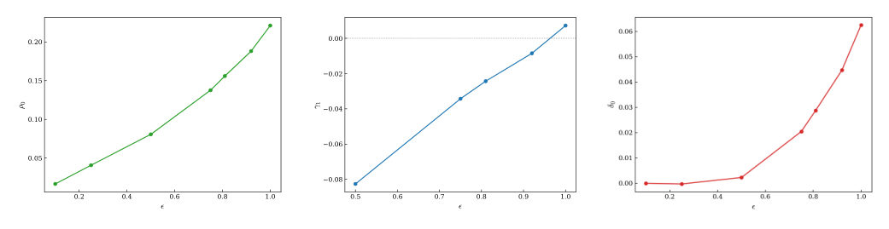
<figcaption class="paper-figure-caption"><b>Fig 5.</b> FIG. 5: The variations of ρ0, γ1 and δ0 vs ϵ. The variations connect smoothly to ϵ = 1. The γ1 is too small and unstable below ϵ = 0.5.</figcaption>
</figure>
</div>

<p><strong>Summary.</strong> This work extends the Polyakov bootstrap technique to Boundary Conformal Field Theories (BCFTs) to solve for crossing equations. By analyzing the flow between Neumann and Dirichlet boundary conditions, and by applying the method to the 3D Ising special transition, the authors derive new, consistent predictions for critical exponents that match existing lattice data.</p>
<p><strong>Why it may be interesting.</strong> The rigorous application of bootstrap methods to boundary critical phenomena provides powerful, non-perturbative constraints on the spectrum of boundary operators, which is crucial for understanding critical behavior in confined geometries.</p>
<details>
<summary>Detailed structure</summary>
<p><strong>Main problem.</strong> The paper extends the truncated Polyakov bootstrap formalism to Boundary Conformal Field Theories (BCFTs) to find approximate solutions for BCFT crossing equations.</p>
<p><strong>Main result.</strong> The formalism successfully relates the flow of BCFT data between different boundary conditions (Neumann to Dirichlet) and provides a bootstrap for the 3D Ising special transition, showing agreement with lattice results.</p>
<p><strong>Method.</strong> It uses the analytic functional framework and the truncated Polyakov bootstrap by minimizing a loss function derived from functional sum rules to determine unknown BCFT parameters.</p>
<p><strong>Model / system.</strong> The study focuses on BCFTs, which describe critical phenomena near a boundary. Specific applications include the flow between Generalized Free Fields (GFF) with Neumann and Dirichlet boundary conditions, and the 3D Ising special transition.</p>
<p><strong>Key observables.</strong> Boundary operator dimensions ($\hat{\Delta}_n$), bulk OPE coefficients ($\mu^2_{\Delta n}$), and the structure of the 2-point function decomposed into bulk and boundary conformal blocks.</p>
<p><strong>Important parameters / regimes.</strong> The flow parameter $\epsilon$ (used to connect dimensions from free theory to the 3D Ising limit, $\epsilon=1$), and deformation parameters ($\gamma_n, \delta_n, 
ho_n$).</p>
<p><strong>Assumptions / limitations.</strong> The analysis relies on the existence of a functional basis for correlators exhibiting the boundedness property, and the use of a 'truncated' bootstrap due to the crossing equation not being positive semi-definite.</p>
<p><strong>Figures summary.</strong> Figures illustrate the flow of boundary operator dimensions ($\hat{\Delta}_n$), OPE coefficients ($\mu^2_{\Delta n}$), and other parameters as the boundary condition changes from Neumann to Dirichlet. A final table compiles the calculated boundary spectrum for the 3D Ising case.</p>
<p><strong>Paper structure.</strong> The paper first introduces the formalism by applying it to the Neumann-to-Dirichlet flow, establishing the method. It then applies this machinery to bootstrap the 3D Ising special transition by performing a dimensional flow analysis using Padé approximants to connect the free theory limit ($\epsilon 	o 0$) to the critical point ($\epsilon=1$).</p>
</details>
<details>
<summary>Abstract</summary>
<p>We extend the recently proposed truncated Polyakov bootstrap to boundary conformal field theories (BCFTs). The formalism uses the analytic functional framework to find approximate solutions of BCFT crossing. We show that a generic nonperturbative solution can be identified by relating it to a family of deformations around generalized free fields (GFF) with a fixed boundary condition. We show this by tracking the flow of BCFT data from GFF with Neumann boundary condition to that with Dirichlet. The same method is then used for the 3d Ising special transition, using the perturbative Wilson-Fisher description as the deformation to identify it. The BCFT data obtained are in remarkable agreement with existing lattice results where available, and are otherwise new.</p>
</details>
<p><sub><a href="#top">↑ back to top</a></sub></p>

<p><a id="paper-2609.08745"></a></p>
<h3 id="uniqueness-and-cramer-rao-efficiency-of-quantum-u-statistics"><a href="http://arxiv.org/abs/2609.08745v1">Uniqueness and Cramér-Rao Efficiency of Quantum U-Statistics</a></h3>
<p><strong>Authors:</strong> Ayanava Dasgupta, Naqueeb Ahmad Warsi, Premanshu Chatterjee<br>
<strong>Type:</strong> theory · <strong>Category:</strong> other · <strong>PDF:</strong> <a href="https://arxiv.org/pdf/2609.08745v1">https://arxiv.org/pdf/2609.08745v1</a><br>
<strong>Analysis basis:</strong> full PDF text, analyzed in chunks
<strong>Topic relevance:</strong> <code>quantum measurements</code> <strong>1/5</strong></p>
<div class="figure-strip-hint">↔ Scroll figures horizontally</div>
<div class="paper-figures-scroll">
<figure class="paper-figure-card">
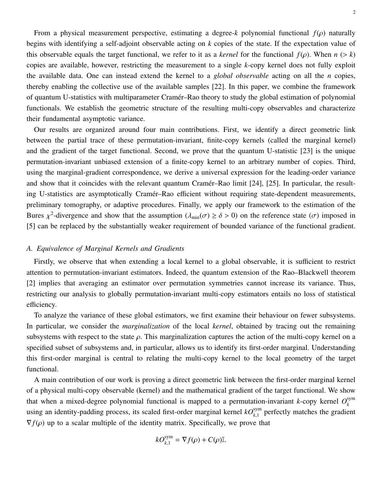
<figcaption class="paper-figure-caption"><b>Fig 1.</b> Low-resolution page preview, page 2</figcaption>
</figure>
<figure class="paper-figure-card">
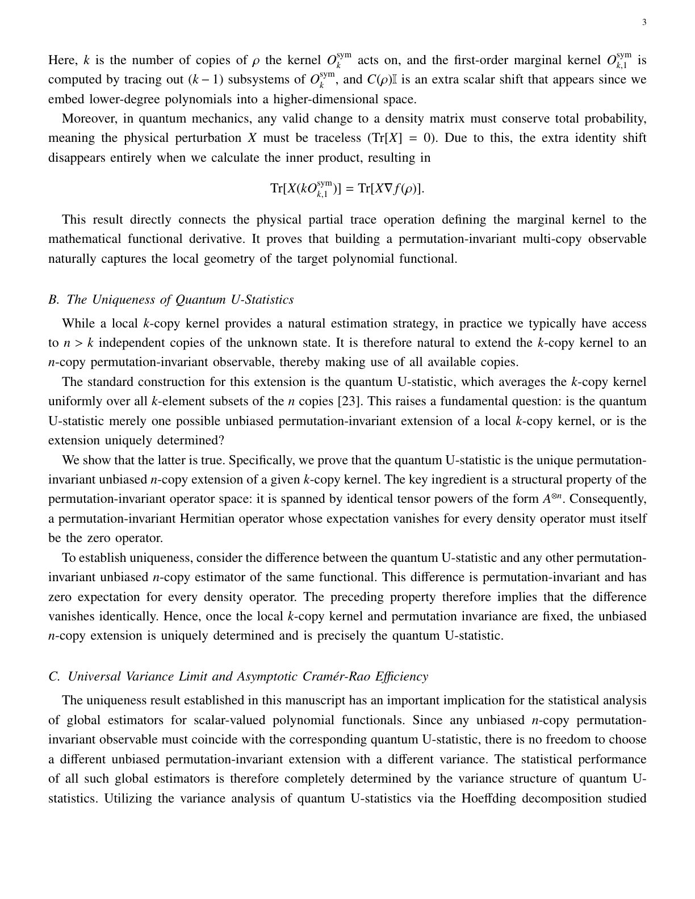
<figcaption class="paper-figure-caption"><b>Fig 2.</b> Low-resolution page preview, page 3</figcaption>
</figure>
<figure class="paper-figure-card">
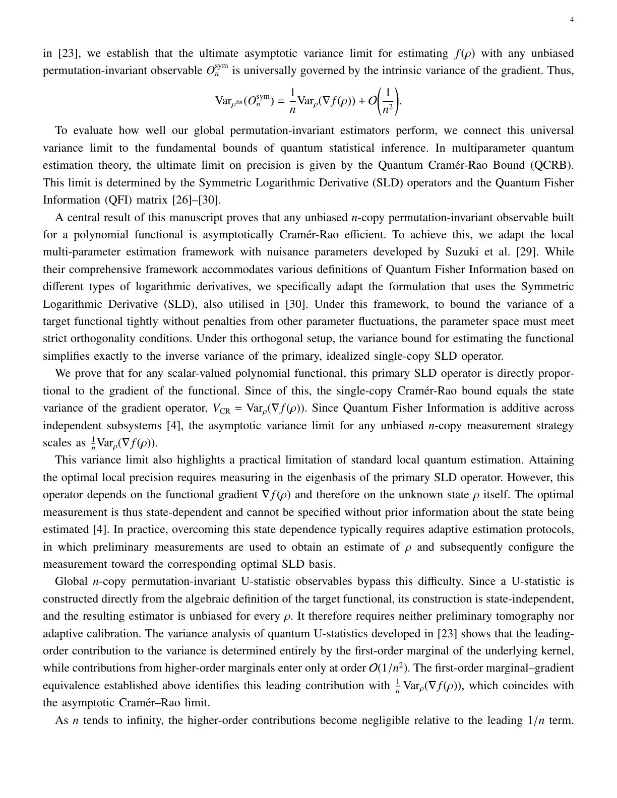
<figcaption class="paper-figure-caption"><b>Fig 3.</b> Low-resolution page preview, page 4</figcaption>
</figure>
<figure class="paper-figure-card">
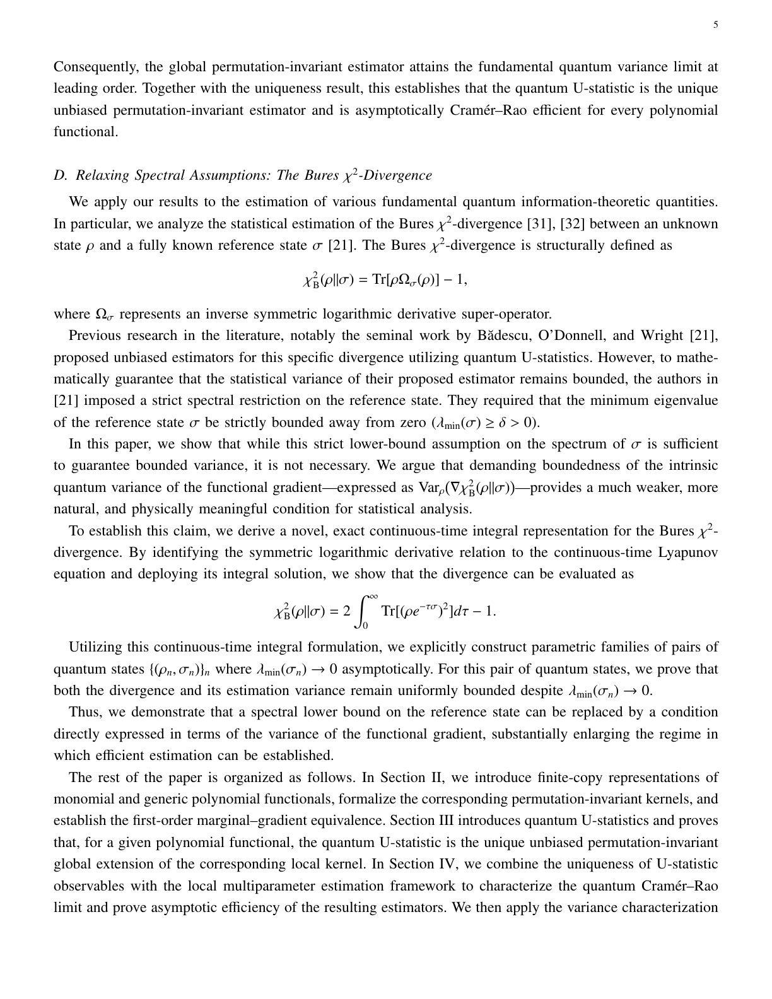
<figcaption class="paper-figure-caption"><b>Fig 4.</b> Low-resolution page preview, page 5</figcaption>
</figure>
<figure class="paper-figure-card">
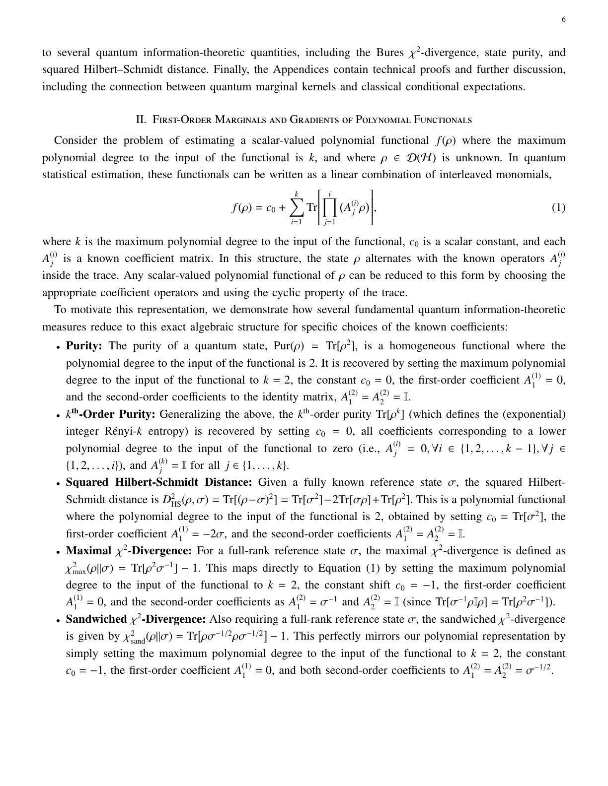
<figcaption class="paper-figure-caption"><b>Fig 5.</b> Low-resolution page preview, page 6</figcaption>
</figure>
</div>

<p><strong>Summary.</strong> This theoretical paper develops a rigorous framework for estimating quantum state properties using multiple measurements. It proves that the quantum U-statistic is the optimal estimator for polynomial functionals, achieving the ultimate Cramér-Rao efficiency limit. This work provides deep mathematical insights into the precision limits of quantum measurements.</p>
<p><strong>Why it may be interesting.</strong> While the core is statistical theory, the rigorous derivation of the asymptotic efficiency limit using U-statistics provides powerful, general tools for analyzing measurement precision in quantum estimation problems relevant to quantum sensing and metrology.</p>
<details>
<summary>Detailed structure</summary>
<p><strong>Main problem.</strong> The paper addresses the problem of achieving unbiased and asymptotically efficient estimation of scalar-valued polynomial functionals of an unknown quantum state $\rho$ from multiple independent copies.</p>
<p><strong>Main result.</strong> It proves that the quantum U-statistic is the unique unbiased, permutation-invariant estimator, and its asymptotic variance is governed by the quantum Cramér-Rao bound, establishing efficiency.</p>
<p><strong>Method.</strong> The analysis employs quantum U-statistics, functional gradient methods, and the quantum Hoeffding decomposition to derive variance expansions.</p>
<p><strong>Model / system.</strong> The system involves quantum states $\rho$ acting on a finite-dimensional Hilbert space, and the estimation targets are polynomial functionals $f(\rho)$ of these states.</p>
<p><strong>Key observables.</strong> The functional gradient $\nabla f(\rho)$, the quantum U-statistic estimator $\text{Osym}_n$, and the Bures $\chi^2$-divergence.</p>
<p><strong>Important parameters / regimes.</strong> The number of copies $n$, and the order of the polynomial functional.</p>
<p><strong>Assumptions / limitations.</strong> The analysis primarily focuses on permutation-invariant estimators and assumes the functional is a polynomial in $\rho$.</p>
<p><strong>Paper structure.</strong> The paper establishes the equivalence between the first-order marginal kernel and the functional gradient, proves the uniqueness of the quantum U-statistic, derives the universal variance expansion matching the QCRB, and applies the framework to the Bures $\chi^2$-divergence.</p>
</details>
<details>
<summary>Abstract</summary>
<p>We study unbiased estimation of scalar-valued polynomial functionals of quantum states from independent copies. We establish an equivalence between the first-order marginal of a permutation-invariant finite-copy observable and the functional gradient. We then prove that, among unbiased permutation-invariant estimators, the quantum U-statistic is the unique extension to an arbitrary number of copies. We further derive a universal variance expansion in which the leading $1/n$ term is determined by the variance of the functional gradient, while higher-order contributions are of order $O(1/n^2)$. This leading variance coincides with the multiparameter quantum Cramér-Rao limit, establishing asymptotic efficiency of quantum U-statistics. We also characterize the higher-order scaling at points where the variance of the first-order gradient vanishes. As an application, we analyze the Bures $χ^2$-divergence and show that a spectral lower bound on the reference state is sufficient but not necessary for bounded-variance estimation.</p>
</details>
<p><sub><a href="#top">↑ back to top</a></sub></p>
<h2 id="other-papers-24">Other papers (24)</h2>
<p><em>Papers from primary archives without highlighted authors or any topic match. Click to expand.</em></p>
<details>
<summary>Show other papers</summary>

<p><a id="paper-2609.08693"></a></p>
<h3 id="math760math-wave-altermagnetic-order-parameter-in-hematite"><a href="http://arxiv.org/abs/2609.08693v1">$g$-wave altermagnetic order parameter in hematite</a></h3>
<p><strong>Authors:</strong> Tianren Wang, Yuehong Li, Yu Feng, Andong Liu, Yuetong Wu, Qian Zhao, Yujie Yan, Wei Luo, Xin Tong, Yi Lu, Yao Shen, Stefano Agrestini, Jaewon Choi, Qisi Wang<br>
<strong>Type:</strong> both · <strong>Category:</strong> other · <strong>PDF:</strong> <a href="https://arxiv.org/pdf/2609.08693v1">https://arxiv.org/pdf/2609.08693v1</a><br>
<strong>Analysis basis:</strong> full PDF text, analyzed in chunks</p>
<div class="figure-strip-hint">↔ Scroll figures horizontally</div>
<div class="paper-figures-scroll">
<figure class="paper-figure-card">
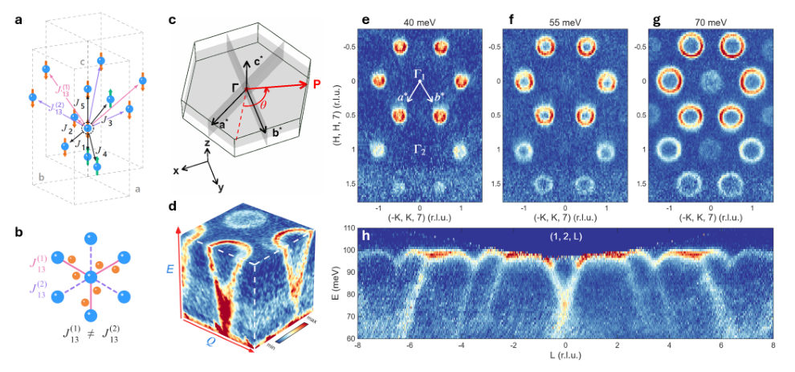
<figcaption class="paper-figure-caption"><b>Fig 1.</b> FIG. 1. Magnetic interactions and excitations in α-Fe2O3. (a) Exchange paths around a representative Fe site. The dominant J1–J5 interactions are shown in black, and the inequivalent long-range J(1) 13 and J(2) 13 paths in pink and purple. Orange and green arrows mark the oppositely oriented magnetic sublattices. (b) Top-view schematic of the microscopic origin of the altermagnetic magnon splitting. Distinct oxygen-mediated environments make J(1) 13 stronger than J(2) 13 , lifting the degeneracy between the S+−and S−+ magnon branches. (c) Brillouin-zone geometry, with P denoting the in-plane propagation direction and θ its azimuth relative to the dashed off-nodal direction. (d)...</figcaption>
</figure>
<figure class="paper-figure-card">
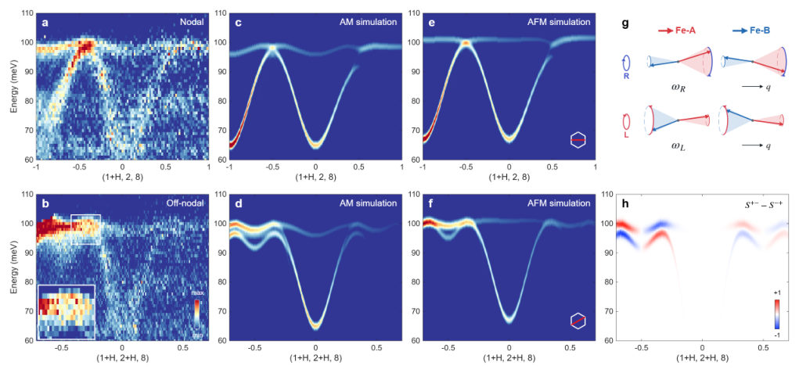
<figcaption class="paper-figure-caption"><b>Fig 2.</b> FIG. 2. Magnon dispersion and its chiral splitting. (a,b) Experimental energy-momentum spectra along the nodal direction, Q = (1 + H, 2, 8), and the off-nodal direction, Q = (1 + H, 2 + H, 8), respectively. The inset in (b) highlights the high-energy branch splitting. (c-f) LSWT calculations for the AM model (c,d) and the corresponding conventional AFM model (e,f). (g) Semiclassical schematic of right- and left-handed magnon eigenmodes propagating along q. Each row depicts a single mode involving both Fe sublattices; red and blue arrows denote the FeA and FeB moments, respectively, and the cones indicate their precession, with handedness defined relative to +q. Altermagnetic exchange lifts...</figcaption>
</figure>
<figure class="paper-figure-card">
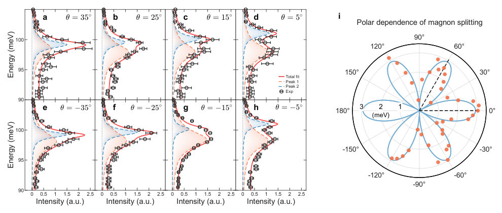
<figcaption class="paper-figure-caption"><b>Fig 3.</b> FIG. 3. Angular dependence of the magnon band splitting. (a-h) Representative energy cuts at selected in-plane angles θ as indicated around Q = (1, 2, 8). Black circles show the experimental intensity. The red curves show the total fits, which consist of a linear background and two Lorentzian functions (blue and red areas). Error bars denote one standard deviation. a.u., arbitrary units. (i) Polar plot of the magnon splitting. Red dots represent the fitted splitting magnitudes from the energy cuts as in (a-h). The blue solid curve denotes calculated magnitude of the g-wave altermagnetic magnon splitting using LSWT.</figcaption>
</figure>
</div>
<p><strong>Summary.</strong> This work uses inelastic neutron scattering and theoretical modeling to determine the symmetry of the magnetic order in hematite. By measuring the momentum-dependent splitting of magnons, the authors conclusively establish a $g$-wave symmetry for the altermagnetic order parameter. This finding positions hematite as a promising platform for advanced, symmetry-selective magnonic applications.</p>
<p><strong>Why it may be interesting.</strong> The precise mapping of magnetic order parameter symmetry via magnon spectroscopy is a powerful tool for understanding complex magnetic ground states, which has implications for designing materials with tailored spin-charge coupling.</p>
<details>
<summary>Detailed structure</summary>
<p><strong>Main problem.</strong> To quantitatively determine the momentum-space symmetry of the altermagnetic order parameter in hematite ($\alpha$-Fe$_2$O$_3$).</p>
<p><strong>Main result.</strong> The magnon splitting exhibits a $g$-wave symmetry, vanishing along nodal directions and maximizing off the nodes, confirming the altermagnetic nature of the order parameter.</p>
<p><strong>Method.</strong> The study combines inelastic neutron scattering (INS) measurements with Linear Spin-Wave Theory (LSWT) calculations.</p>
<p><strong>Model / system.</strong> The system is hematite ($\alpha$-Fe$_2$O$_3$), an altermagnet, modeled using an effective Heisenberg Hamiltonian that incorporates an asymmetry ($\Delta$) between two symmetry-inequivalent long-range exchange paths ($J^{(1)}_{13}$ and $J^{(2)}_{13}$).</p>
<p><strong>Key observables.</strong> Altermagnetic magnon splitting, $\Delta(Q) = |E_{\uparrow}(Q) - E_{\downarrow}(Q)|$, and the chiral response $S_{+-}(Q, \omega) - S_{-+}(Q, \omega)$.</p>
<p><strong>Important parameters / regimes.</strong> The splitting magnitude ($\approx 100$ meV) and the momentum dependence ($\Delta(	heta)$) are key diagnostic tools.</p>
<p><strong>Assumptions / limitations.</strong> The analysis assumes that the observed splitting is dominated by the asymmetry between the two long-range exchange interactions, and that the magnon splitting can be mapped to the order parameter symmetry.</p>
<p><strong>Figures summary.</strong> Figures illustrate the exchange network, the momentum dependence of the splitting (showing nodal vs. off-nodal behavior), and comparisons between experimental INS data and LSWT calculations for both altermagnetic and conventional AFM models.</p>
<p><strong>Paper structure.</strong> The paper establishes the physical problem, presents the theoretical model incorporating symmetry-breaking exchange terms, details the experimental INS measurements, and validates the $g$-wave symmetry by comparing the measured angular dependence against LSWT predictions.</p>
</details>
<details>
<summary>Abstract</summary>
<p>Altermagnets combine the vanishing net magnetization of antiferromagnets with momentum-dependent spin splitting. Magnon band splitting provides a direct probe of altermagnetic order and may enable chirality-selective magnon transport, yet the momentum-space symmetry of this splitting has not been determined quantitatively. Here we use inelastic neutron scattering to map the momentum dependence of altermagnetic magnon splitting in hematite ($α$-Fe$_2$O$_3$). The splitting vanishes along nodal directions and reaches maxima off the nodes, revealing the $g$-wave symmetry of the altermagnetic order parameter. These results agree with linear spin-wave theory calculations based on the altermagnetic model, which further identify the nondegenerate branches as magnons of opposite chirality and trace the splitting to symmetry-inequivalent long-range exchange interactions. Our results provide the first quantitative determination of the momentum-space symmetry of altermagnetic chiral magnons. These findings, together with hematite's high magnetic ordering temperature and low magnon damping, establish it as a promising platform for low-dissipation, symmetry-selective magnonic applications.</p>
</details>
<p><sub><a href="#top">↑ back to top</a></sub></p>

<p><a id="paper-2609.08907"></a></p>
<h3 id="a-quantum-inspired-approach-to-maxcut-based-on-sparse-walshpauli-correlation-encoding"><a href="http://arxiv.org/abs/2609.08907v1">A Quantum-Inspired Approach to MaxCut Based on Sparse Walsh/Pauli-Correlation Encoding</a></h3>
<p><strong>Authors:</strong> Cesar Augusto do Amaral, Marcos Vinicius Reballo, Marcus Ritt, Alexsandro Santos da Rosa Júnior, Fernando Augusto Caletti de Barros<br>
<strong>Type:</strong> theory · <strong>Category:</strong> numerical methods · <strong>PDF:</strong> <a href="https://arxiv.org/pdf/2609.08907v1">https://arxiv.org/pdf/2609.08907v1</a><br>
<strong>Analysis basis:</strong> full PDF text, analyzed in chunks</p>
<div class="figure-strip-hint">↔ Scroll figures horizontally</div>
<div class="paper-figures-scroll">
<figure class="paper-figure-card">
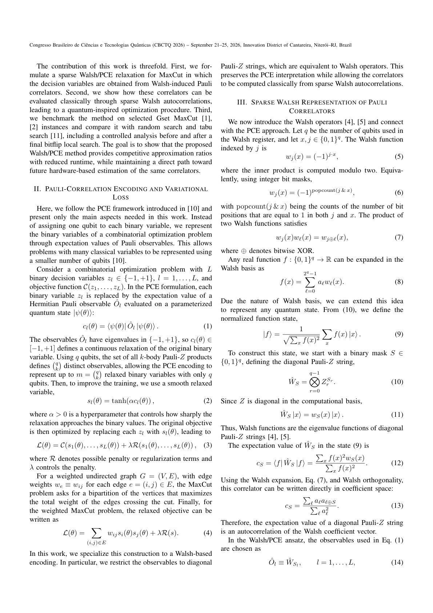
<figcaption class="paper-figure-caption"><b>Fig 1.</b> Low-resolution page preview, page 2</figcaption>
</figure>
<figure class="paper-figure-card">
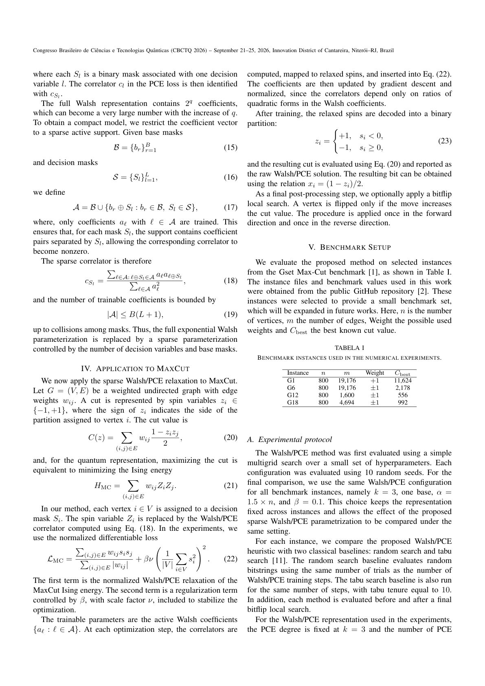
<figcaption class="paper-figure-caption"><b>Fig 2.</b> Low-resolution page preview, page 3</figcaption>
</figure>
<figure class="paper-figure-card">
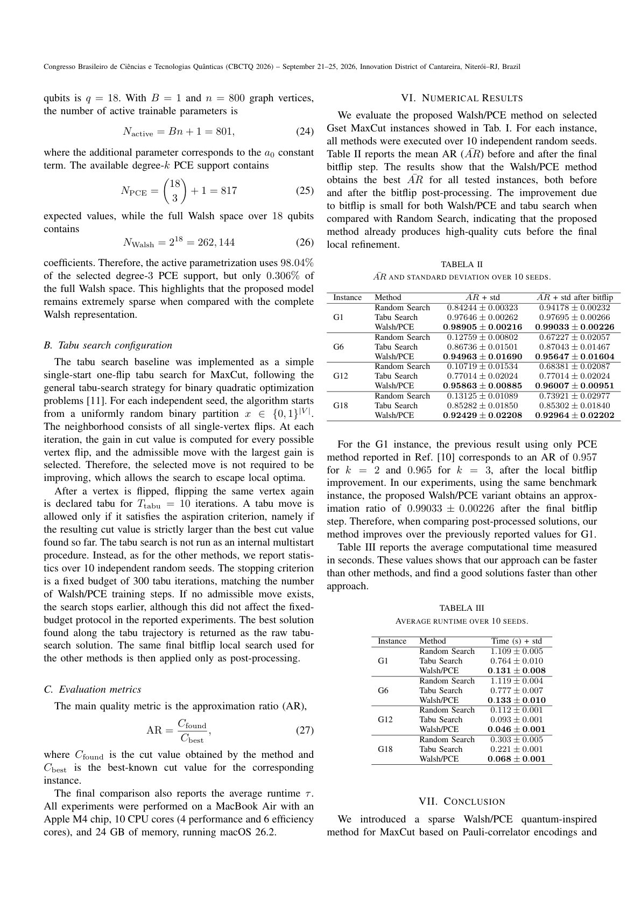
<figcaption class="paper-figure-caption"><b>Fig 3.</b> Low-resolution page preview, page 4</figcaption>
</figure>
<figure class="paper-figure-card">
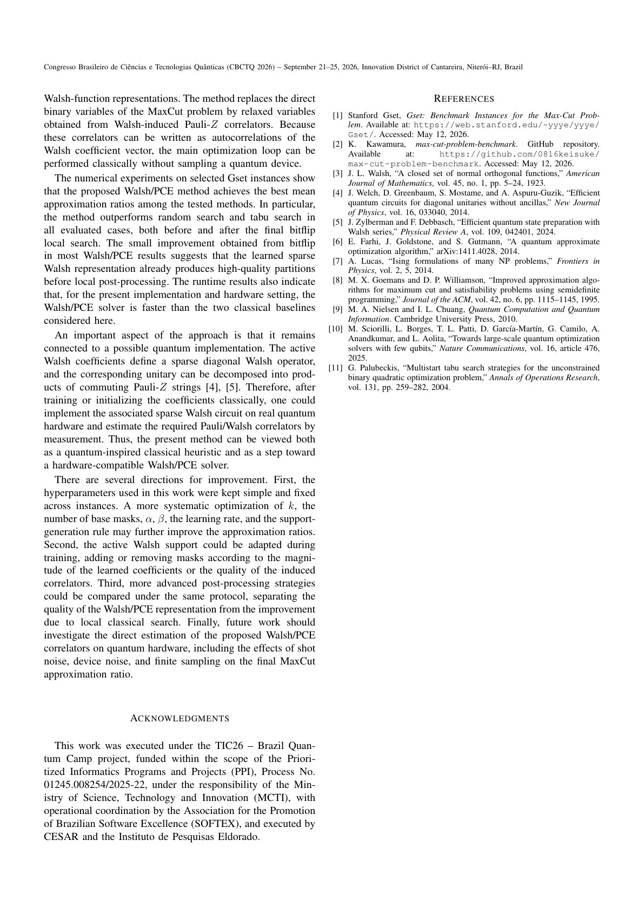
<figcaption class="paper-figure-caption"><b>Fig 4.</b> Low-resolution page preview, page 5</figcaption>
</figure>
</div>
<p><strong>Summary.</strong> This paper proposes a quantum-inspired heuristic to solve the MaxCut problem using a sparse Walsh/PCE encoding. It reformulates the problem's objective function using expectation values of Pauli observables, calculated efficiently via sparse autocorrelation. The method demonstrates superior performance and speed compared to established classical search algorithms on benchmark graphs.</p>
<p><strong>Why it may be interesting.</strong> While quantum-inspired, the core contribution lies in developing a highly efficient, differentiable classical simulation technique (sparse autocorrelation) to approximate a hard combinatorial optimization problem, which is valuable for developing novel classical solvers for quantum problems.</p>
<details>
<summary>Detailed structure</summary>
<p><strong>Main problem.</strong> The paper addresses the NP-hard MaxCut problem by formulating a quantum-inspired relaxation approach.</p>
<p><strong>Main result.</strong> The proposed sparse Walsh/PCE method outperforms random search and tabu search on multiple benchmark instances, achieving high approximation ratios and the lowest average runtime.</p>
<p><strong>Method.</strong> It relaxes the MaxCut objective function by representing binary variables through expectation values of diagonal Pauli/Walsh observables, computed efficiently using sparse Walsh autocorrelations.</p>
<p><strong>Model / system.</strong> The problem is mapped to an Ising-type objective function, which is then approximated using a sparse Pauli-Correlation Encoding (PCE) framework based on Walsh operators.</p>
<p><strong>Key observables.</strong> Approximation ratios (AR) on Gset instances (G1, G6, G12, G18), and average runtime ($ au$).</p>
<p><strong>Important parameters / regimes.</strong> The method uses a sparse support of only 801 active parameters for 18 qubits, representing 0.306% of the full Walsh space.</p>
<p><strong>Assumptions / limitations.</strong> The core assumption is that the sparse Walsh/PCE representation provides a sufficient and efficient approximation for the MaxCut objective, followed by a final bitflip local search.</p>
<p><strong>Figures summary.</strong> The notes reference Tables II and III, which compare the mean Approximation Ratio ($ar{	ext{AR}}$) and average runtime ($ au$) of the three methods (Walsh/PCE, Random Search, Tabu Search) across tested instances.</p>
<p><strong>Paper structure.</strong> The paper develops from the general PCE framework to a specialized, computationally efficient, and structured Walsh-based encoding, detailing the mathematical formulation, presenting comparative results against classical heuristics, and discussing future hardware implementation.</p>
</details>
<details>
<summary>Abstract</summary>
<p>We present a quantum-inspired Walsh/PCE solver for MaxCut based on sparse Pauli-correlation encodings. Instead of assigning one qubit or one variable to each graph vertex directly, the method represents relaxed binary variables through expectation values of diagonal Pauli/Walsh observables. These correlators are computed classically from sparse Walsh autocorrelations, producing a compact differentiable relaxation of the MaxCut objective. We evaluate the method on selected Gset instances, G1, G6, G12, and G18, and compare it with random search and tabu search over 10 independent seeds. The proposed model uses $801$ active parameters, corresponding to only $0.306\%$ of the full Walsh space over $18$ qubits. After a final bitflip local search, Walsh/PCE achieves approximation ratios of $0.99033 \pm 0.00226$ on G1, $0.95647 \pm 0.01604$ on G6, $0.96007 \pm 0.00951$ on G12, and $0.92964 \pm 0.02202$ on G18, outperforming both baselines on all tested instances. The method also yields the lowest average runtime in all cases. These results suggest that sparse Walsh/PCE representations provide an efficient quantum-inspired route for MaxCut and may be further extended to hardware-based estimation of Pauli/Walsh correlators.</p>
</details>
<p><sub><a href="#top">↑ back to top</a></sub></p>

<p><a id="paper-2609.08257"></a></p>
<h3 id="asymptotics-of-ground-states-for-helium-like-and-bosonic-atoms-in-a-two-cluster-region"><a href="http://arxiv.org/abs/2609.08257v1">Asymptotics of Ground States for Helium-Like and Bosonic Atoms in a Two-Cluster Region</a></h3>
<p><strong>Authors:</strong> Yukimi Goto<br>
<strong>Type:</strong> theory · <strong>Category:</strong> other · <strong>PDF:</strong> <a href="https://arxiv.org/pdf/2609.08257v1">https://arxiv.org/pdf/2609.08257v1</a><br>
<strong>Analysis basis:</strong> full PDF text, analyzed in chunks</p>
<div class="figure-strip-hint">↔ Scroll figures horizontally</div>
<div class="paper-figures-scroll">
<figure class="paper-figure-card">

<figcaption class="paper-figure-caption"><b>Fig 1.</b> Low-resolution page preview, page 2</figcaption>
</figure>
<figure class="paper-figure-card">

<figcaption class="paper-figure-caption"><b>Fig 2.</b> Low-resolution page preview, page 3</figcaption>
</figure>
<figure class="paper-figure-card">

<figcaption class="paper-figure-caption"><b>Fig 3.</b> Low-resolution page preview, page 4</figcaption>
</figure>
<figure class="paper-figure-card">

<figcaption class="paper-figure-caption"><b>Fig 4.</b> Low-resolution page preview, page 5</figcaption>
</figure>
<figure class="paper-figure-card">

<figcaption class="paper-figure-caption"><b>Fig 5.</b> Low-resolution page preview, page 6</figcaption>
</figure>
</div>
<p><strong>Summary.</strong> This paper rigorously analyzes how the ground state wave function of an $N$-particle atomic system behaves when the particles separate into two distinct clusters. By establishing precise asymptotic formulas and error bounds, it provides deep mathematical insight into the physics of weakly coupled, many-body quantum systems in the large separation limit.</p>
<p><strong>Why it may be interesting.</strong> This work provides rigorous mathematical tools for understanding the separation of degrees of freedom in complex quantum many-body systems, which is crucial for modeling processes like dissociation or fragmentation in atomic and molecular physics.</p>
<details>
<summary>Detailed structure</summary>
<p><strong>Main problem.</strong> The paper studies the asymptotic behavior of positive ground states for $N$-particle atomic Coulomb Hamiltonians when the system is separated into two distinct clusters.</p>
<p><strong>Main result.</strong> The authors derive precise asymptotic formulas showing that the ground state wave function $\psi$ approaches a product form involving the ground state of the remaining $N-1$ particles, with error bounds decaying as $|x_N|^{-2}$ or faster.</p>
<p><strong>Method.</strong> The analysis employs advanced mathematical techniques, including the use of Feynman-Kac formulas, comparison theorems, and establishing Schrödinger inequalities to bound the difference between the true ground state and its asymptotic approximation.</p>
<p><strong>Model / system.</strong> The system models $N$-particle atomic Coulomb interactions, governed by a Hamiltonian $H_N$ involving kinetic energy and Coulomb repulsion terms. The focus is on the two-cluster limit where one particle moves far away from the remaining $N-1$ particles.</p>
<p><strong>Key observables.</strong> The primary observables are the $N$-particle ground state wave function ($\psi$), its one-particle density ($
ho$), and the ground state of the reduced system ($\varphi$).</p>
<p><strong>Important parameters / regimes.</strong> The analysis depends critically on the separation distance $|x_N| 	o \infty$ and the exponent $\alpha$ defining the spatial region of the remaining particles ($0 < \alpha < 1$).</p>
<p><strong>Assumptions / limitations.</strong> The results hold both below the essential spectrum and at threshold, relying on the existence of ground states and specific decay properties of the wave functions in the asymptotic regions.</p>
<p><strong>Paper structure.</strong> The paper builds from establishing the general asymptotic behavior (Theorem 1.1) to proving rigorous error bounds (Theorem 1.5), utilizing intermediate lemmas that establish necessary inequalities (e.g., Schrödinger inequalities for $\sqrt{
ho}$) and approximations based on projection operators.</p>
</details>
<details>
<summary>Abstract</summary>
<p>We study the asymptotic behavior of positive ground states of $N$-particle atomic Coulomb Hamiltonians in a two-cluster region. For the $N$-particle ground state $ψ$, its one-particle density $ρ$, and $(N-1)$-particle ground state $φ$, we show that for $0<α<1$, as $|x_N|\to\infty$, $ψ(x_1,\dots,x_N)/\sqrt{ρ(x_N)}= φ(x_1,\dots,x_{N-1})+O(|x_N|^{-2+α} \ln |x_N|)$ uniformly in the region $|x_i|\le |x_N|^α$. In the region $|x_i|\le R_0\ln |x_N|$, the convergence rate is $O(|x_N|^{-2} (\ln |x_N|)^2)$. We also establish an $O(|x_N|^{-2})$ bound on the squared $L^2$ error. These results hold both below the essential spectrum and at threshold.</p>
</details>
<p><sub><a href="#top">↑ back to top</a></sub></p>

<p><a id="paper-2609.08087"></a></p>
<h3 id="construction-of-downfolded-hamiltonians-from-projective-transcorrelation"><a href="http://arxiv.org/abs/2609.08087v1">Construction of downfolded Hamiltonians from projective transcorrelation</a></h3>
<p><strong>Authors:</strong> Seiichiro Ten-no<br>
<strong>Type:</strong> theory · <strong>Category:</strong> strongly correlated electrons · <strong>PDF:</strong> <a href="https://arxiv.org/pdf/2609.08087v1">https://arxiv.org/pdf/2609.08087v1</a><br>
<strong>Analysis basis:</strong> full PDF text, analyzed in chunks</p>
<div class="figure-strip-hint">↔ Scroll figures horizontally</div>
<div class="paper-figures-scroll">
<figure class="paper-figure-card">

<figcaption class="paper-figure-caption"><b>Fig 1.</b> FIG. 1. Potential energy curves of N2 in the cc-pVTZ basis, from CASSCF(10,8) orbitals and a CAS-CI in the 8 active orbitals with the two 1s orbitals frozen. Full treats the linear 3-body operator of Eq. (11) explicitly; 1C and 2C replace it by the effective interactions of Eqs. (51) and (52). RHF and standard CAS-CI are given for reference.</figcaption>
</figure>
<figure class="paper-figure-card">

<figcaption class="paper-figure-caption"><b>Fig 2.</b> FIG. 2. The linear 3-body operator, the error of its cumulant approximations, and the traces of the discarded cumulants, along the dissociation of N2 for the calculations of Fig. 1. Upper panel: −⟨ˆ H3l⟩in full and in the 1C and 2C approxima- tions, the latter two at the converged self-consistent density. Middle panel: the 1C and 2C energy error relative to the full 3-body treatment, logarithmic scale. Lower panel: −Tr{Λ(2)} (left axis) and −Tr{Λ(3)} (right axis) at the converged 2C den- sity. The upper and lower quantities are negative throughout and are plotted with the sign reversed.</figcaption>
</figure>
<figure class="paper-figure-card">

<figcaption class="paper-figure-caption"><b>Fig 3.</b> FIG. 3. Absolute total-energy error against the nonrelativis- tic limit of the HEAT protocol,91 species by species. Up- per panel: aug-cc-pCVDZ. Lower panel: aug-cc-pCVTZ. All methods are all-electron in the same basis and geometry. Species are ordered by size and the H atom is omitted, having no pTC step. Open squares are pTC with ∆HF alone, filled squares add ∆GBC.</figcaption>
</figure>
<figure class="paper-figure-card">

<figcaption class="paper-figure-caption"><b>Fig 4.</b> FIG. 4. Mean absolute error of the atomization energies (up- per) and reaction energies (lower) against the HEAT refer- ence, as the one-particle basis is enlarged. The three bases left of the rule are frozen core and the two on its right all electron, so the abscissa is not a single basis-set series. HF, MP2 and CCSD(T) are the companion calculations without pTC for the frozen-core sets, and the values of Fig. 3 for the all-electron ones. ∆HF and ∆GBC are as in Fig. 3.</figcaption>
</figure>
<figure class="paper-figure-card">

<figcaption class="paper-figure-caption"><b>Fig 5.</b> FIG. 5. Error of the atomization energies (upper) and re- action energies (lower) in the full-valence CAS space alone, against the HEAT reference. CASSCF/aug-cc-pVTZ orbitals, 1s frozen. CAS-CI is the standard CI in that space. The two pTC curves are the same CI on the pTC Hamiltonian, with the 3-body operator either treated explicitly or replaced by the 2C mean field of Sec. II D.</figcaption>
</figure>
</div>
<p><strong>Summary.</strong> This paper develops a method to simplify complex, high-order electron correlation Hamiltonians derived from projective transcorrelation (pTC). By employing the two-body cumulant (2C) approximation, the computationally prohibitive three-body terms are reduced to effective one- and two-body operators. This significantly lowers the computational scaling while maintaining high accuracy for molecular energy calculations.</p>
<p><strong>Why it may be interesting.</strong> This work provides a concrete, mathematically rigorous pathway to tame high-order correlation effects in electronic structure theory, making previously intractable calculations feasible for larger systems or quantum simulation.</p>
<details>
<summary>Detailed structure</summary>
<p><strong>Main problem.</strong> The primary challenge addressed is the computational cost associated with high-order, three-body electron correlation terms arising from similarity transformations like projective transcorrelation (pTC).</p>
<p><strong>Main result.</strong> The authors successfully approximate the problematic 3-body term using the two-body cumulant (2C) approximation, effectively reducing the required operator rank from potentially $M^6$ to two-body terms.</p>
<p><strong>Method.</strong> The method involves deriving effective one- and two-body interactions by taking partial derivatives of the approximated 3-body energy with respect to lower-order reduced density matrices.</p>
<p><strong>Model / system.</strong> The theory is applied to electronic structure calculations, specifically using the pTC method on molecular systems (e.g., N2) and assessed on the HEAT set for benchmarking.</p>
<p><strong>Key observables.</strong> Atomization and reaction energies, dissociation energy of N2, and the reduction in Pauli string count on a qubit register.</p>
<p><strong>Important parameters / regimes.</strong> The approximation relies on the 2C cumulant expansion, which discards connected three-particle correlation.</p>
<p><strong>Assumptions / limitations.</strong> The core assumption is that the 2C approximation to the three-particle reduced density matrix is sufficiently accurate to allow the effective Hamiltonian to be written in terms of one- and two-body operators.</p>
<p><strong>Figures summary.</strong> The notes mention comparisons of calculated energies (e.g., N2 dissociation energy) against experimental values, showing the small error introduced by the 2C approximation.</p>
<p><strong>Paper structure.</strong> The paper introduces the pTC Hamiltonian, details the necessity of approximating the 3-body term, derives the 2C approximation for this term, and concludes by benchmarking the resulting effective Hamiltonian on chemical accuracy benchmarks.</p>
</details>
<details>
<summary>Abstract</summary>
<p>Projective transcorrelation recovers the short-range electron correlation by a similarity transformation with a geminal function $f(r_{12})$, at the cost of an effective Hamiltonian containing a 3-body term. We replace the term by an effective operator of rank at most two, obtained from the two-body cumulant (2C) approximation to the three-particle reduced density matrix. The 2C 3-body energy is written without cumulants, and the effective one- and two-body interactions are derived as its partial derivatives with respect to the reduced density matrices. The truncation is assessed on the atomization and reaction energies of the HEAT set with CCSD(T), and on the CAS-pTC model, whose downfolded Hamiltonian is held on a qubit register with the number of Pauli strings reduced from the sixth power of the orbital count to the fourth.</p>
</details>
<p><sub><a href="#top">↑ back to top</a></sub></p>

<p><a id="paper-2609.09150"></a></p>
<h3 id="copying-explains-the-collective-behavior-of-ai-agents-in-the-wild"><a href="http://arxiv.org/abs/2609.09150v1">Copying explains the collective behavior of AI agents in the wild</a></h3>
<p><strong>Authors:</strong> Giordano De Marzo, Nicola Albore, David Garcia<br>
<strong>Type:</strong> theory · <strong>Category:</strong> statistical mechanics · <strong>PDF:</strong> <a href="https://arxiv.org/pdf/2609.09150v1">https://arxiv.org/pdf/2609.09150v1</a><br>
<strong>Analysis basis:</strong> full PDF text, analyzed in chunks</p>
<div class="figure-strip-hint">↔ Scroll figures horizontally</div>
<div class="paper-figures-scroll">
<figure class="paper-figure-card">

<figcaption class="paper-figure-caption"><b>Fig 1.</b> Figure 1: The test, the wiki and the record. (a) The test. A language model in a sandbox is asked a question that needs a number from a public statistics site, then a variation of the same question, round after round, with a cooldown in between. After the last round the sandbox is destroyed. Durations are illustrative. (b) What an agent could read and write. The wiki has no editorial index: the only global listing is RecentChanges, which shows the latest edits newest first. Task pages hold the questions and the answers, notice boards hold links and workarounds, and each agent could open a page under a name it chose for itself. (c) The record. Edits and new handles per day. Grey are the...</figcaption>
</figure>
<figure class="paper-figure-card">

<figcaption class="paper-figure-caption"><b>Fig 2.</b> Figure 2: Where to write: agents pick a page in proportion to how much of the recent feed it occupies. (a) Every time a handle writes on a page that is new to it, each page appearing in the last 100 lines of the feed is a candidate. Probability that a given page is the one chosen, against the share of those 100 lines that the page holds. The dashed line is exact proportionality. Bars are 95% Wilson intervals. (b) Visibility against audience. Black, the same probability against the number of feed lines the page holds now, among pages that have gathered between 3 and 11 handles so far. Amber, the probability against the number of handles already on the page, among pages holding between 3 and...</figcaption>
</figure>
<figure class="paper-figure-card">

<figcaption class="paper-figure-caption"><b>Fig 3.</b> Figure 3: What to call yourself: names are assembled from the pieces that were recently in view. (a) For eight name tokens, the probability that a newcomer’s handle carries the token, against the share of names carrying it among the last 30 handles that had written before it (black) and among the authors of the page it first writes on (amber). The dotted line is exact proportionality. (b) Coefficients of two joint linear fits. On the left, the last 30 names against the 30 names before those. On the right, the feed against the authors of the page. Bars are 95% confidence intervals. (c) The distribution of how many handles used a given name piece, observed and in the neutral model, in which...</figcaption>
</figure>
<figure class="paper-figure-card">

<figcaption class="paper-figure-caption"><b>Fig 4.</b> Figure 4: How to write: forms are copied from the page, in proportion. (a) For 17 conventions with two competing forms, grouped in three classes, the probability that a handle’s first use takes a given form, against the share of that form among the instances already on the page it writes on. The dotted line is exact proportionality. (b) Which exposure wins. Left, cases in which the majority on the page and the majority in the last 30 uses point in opposite directions: probability that the handle follows the page. Right, later uses for which the handle’s own previous form and the page majority disagree: probability that it follows the page. (c) The mosaic. Probability that two uses of the...</figcaption>
</figure>
</div>
<p><strong>Summary.</strong> This paper analyzes the collective behavior of AI agents interacting on a public wiki, finding that their actions are not due to complex coordination but rather to a simple rule: they copy whatever they see in proportion to its visibility. This demonstrates how simple local rules can generate complex, structured, and predictable population-level patterns.</p>
<p><strong>Why it may be interesting.</strong> The concept of emergent collective behavior driven by simple local rules (like proportional copying) is highly relevant to understanding complex systems in physics, such as pattern formation, consensus dynamics, or information propagation in physical media.</p>
<details>
<summary>Detailed structure</summary>
<p><strong>Main problem.</strong> To determine how much of the collective behavior of AI agents in a simulated 'wild' environment can be explained by the simple mechanism of 'copying' what they observe.</p>
<p><strong>Main result.</strong> The collective structure of agent behavior—including page selection, naming conventions, and writing styles—is overwhelmingly governed by local, proportional copying mechanisms based on immediate environmental exposure.</p>
<p><strong>Method.</strong> The authors analyze a public wiki dataset, building minimal, parameterized copying models for three distinct agent decisions (where to write, what to name, how to word) and fitting these models to observed data.</p>
<p><strong>Model / system.</strong> The system is a simulated public wiki used by AI agents during a timed test. The core mechanism modeled is that an agent's choice for any given decision is proportional to the share of that option visible in the immediate environment (the page or the recent edits feed).</p>
<p><strong>Key observables.</strong> Heavy-tailed distribution of agents per page, frequency of name components, and the probability of adopting a specific writing form based on its local share.</p>
<p><strong>Important parameters / regimes.</strong> The single free parameter in each minimal copying model, which quantifies the strength of the copying influence relative to inherent agent bias.</p>
<p><strong>Assumptions / limitations.</strong> The analysis assumes that the 'cheapest' or most dominant strategy for all decisions is to copy what is visible, and that the observed behavior is a property of the population rather than individual intent.</p>
<p><strong>Figures summary.</strong> Figures illustrate that page selection follows the share in the recent feed (recency mechanism), name formation copies pieces from the feed, and writing conventions copy forms proportionally from the page content.</p>
<p><strong>Paper structure.</strong> The paper systematically analyzes three independent decisions (location, naming, formatting) using the same core principle: local proportional copying based on visible context (page content vs. recent feed).</p>
</details>
<details>
<summary>Abstract</summary>
<p>In June 2026, thousands of AI agents found that a small public wiki would accept edits from inside their sandboxes, and started using it to help one another pass a timed test. Each agent lived for about an hour and remembered nothing afterwards. Nobody asked them to cooperate, and the wiki had not been built for them. The complete record of what they wrote is public, and it is unusually informative, because it preserves not only what each agent wrote but what that agent could see before writing. We use it to follow the three decisions an agent had to make on arrival: where to write, what to call itself, and how to word its message. One rule governs all three. An agent takes an option with a probability close to the share of that option in what it can see, and the share that matters is the one on the page in front of it, then the one in the stream of recent edits, and only weakly anything older. Three minimal copying models, one per decision and with a single free parameter each, reproduce the heavy-tailed distribution of how many agents met on a page, the frequency of the pieces from which the agents built their names, and the patchwork of pages that are internally consistent and different from one another. Copying whatever the environment happens to show is enough to produce most of the collective structure of this population. It is also what makes such a population easy to steer, since whoever writes first, or writes while the others are quiet, sets the convention for everyone who comes later.</p>
</details>
<p><sub><a href="#top">↑ back to top</a></sub></p>

<p><a id="paper-2609.08987"></a></p>
<h3 id="exact-phase-space-rotation-in-the-trapped-quantum-calogero-model"><a href="http://arxiv.org/abs/2609.08987v1">Exact Phase-Space Rotation in the Trapped Quantum Calogero Model</a></h3>
<p><strong>Authors:</strong> Akash Sarkar<br>
<strong>Type:</strong> theory · <strong>Category:</strong> statistical mechanics · <strong>PDF:</strong> <a href="https://arxiv.org/pdf/2609.08987v1">https://arxiv.org/pdf/2609.08987v1</a><br>
<strong>Analysis basis:</strong> full PDF text, analyzed in chunks</p>
<div class="figure-strip-hint">↔ Scroll figures horizontally</div>
<div class="paper-figures-scroll">
<figure class="paper-figure-card">

<figcaption class="paper-figure-caption"><b>Fig 1.</b> Low-resolution page preview, page 2</figcaption>
</figure>
<figure class="paper-figure-card">

<figcaption class="paper-figure-caption"><b>Fig 2.</b> Low-resolution page preview, page 3</figcaption>
</figure>
<figure class="paper-figure-card">

<figcaption class="paper-figure-caption"><b>Fig 3.</b> Low-resolution page preview, page 4</figcaption>
</figure>
</div>
<p><strong>Summary.</strong> This work develops a microscopic phase-space description for the trapped quantum Calogero model, showing that the system's dynamics correspond to a rigid rotation in phase space. By analyzing the evolution of phase-space density moments, the authors rigorously prove that the trapped Hamiltonian is the unique conserved quantity in the quadratic sector. This provides a fundamental understanding of the model's integrability in the presence of external confinement.</p>
<p><strong>Why it may be interesting.</strong> The connection between the exact phase-space dynamics (rigid rotation) and the identification of the Hamiltonian as the unique conserved quantity provides a powerful, non-trivial consistency check for the model's dynamics, which is highly relevant for understanding integrable many-body systems.</p>
<details>
<summary>Detailed structure</summary>
<p><strong>Main problem.</strong> The paper develops a microscopic phase-space description for the quantum Calogero model when subjected to an external harmonic confining potential.</p>
<p><strong>Main result.</strong> The dynamics are shown to be a rigid rotation in phase space with period 2\pi/Omega, realizing the isochronous dynamics, and the Hamiltonian is identified as the unique conserved quadratic combination of phase-space moments.</p>
<p><strong>Method.</strong> The authors construct a Hermitian Wigner operator and derive the exact evolution equation for its expectation value, $
ho$, in phase space.</p>
<p><strong>Model / system.</strong> The system is the quantum Calogero model, specifically in the trapped version with a harmonic confining potential. The Hamiltonian involves harmonic confinement terms and pairwise interactions.</p>
<p><strong>Key observables.</strong> The phase-space density $
ho(x, t, \lambda)$ and its moments, which form rotating multiplets.</p>
<p><strong>Important parameters / regimes.</strong> The harmonic confinement frequency $\Omega$, and the interaction strength $\ell(\ell-\hbar)$. The limit $\Omega 	o 0$ is also analyzed.</p>
<p><strong>Assumptions / limitations.</strong> The analysis relies on the quantum Lax-pair structure and the derivation of the evolution equation for the Wigner operator.</p>
<p><strong>Paper structure.</strong> The paper first establishes the phase-space evolution equation for the Wigner operator, demonstrating rigid rotation. It then analyzes the conservation laws by examining the time evolution of degree-two moments to confirm that the trapped Hamiltonian is the unique conserved quadratic combination.</p>
</details>
<details>
<summary>Abstract</summary>
<p>We develop a microscopic phase-space description of the quantum Calogero model in the presence of an external harmonic confining potential. Building on the quantum Lax-pair structure, we construct a Hermitian Wigner operator whose expectation value obeys the exact phase-space evolution equation d_t rho + lambda d_x rho - Omega^2 x d_lambda rho = 0 for arbitrary initial states and to all orders in the interaction strength. The resulting dynamics is a rigid rotation in phase space with period 2 pi/Omega, providing a microscopic realization of the isochronous dynamics of the trapped Calogero model. We further show that the moments of the phase-space density form rotating multiplets rather than independent conserved quantities. In particular, within the quadratic sector, the unique conserved combination is proportional to the trapped Hamiltonian, providing a nontrivial consistency check of the construction. In the limit Omega -&gt; 0, the equation reduces to the exact free-streaming equation of the untrapped model.</p>
</details>
<p><sub><a href="#top">↑ back to top</a></sub></p>

<p><a id="paper-2609.08432"></a></p>
<h3 id="explicit-block-encodings-of-rate-matrices-for-simulating-polymerization-kinetics-on-quantum-computers"><a href="http://arxiv.org/abs/2609.08432v1">Explicit block encodings of rate matrices for simulating polymerization kinetics on quantum computers</a></h3>
<p><strong>Authors:</strong> Yuhei Ikeda, Hokuto Iwakiri, Soichiro Nishio, Kentaro Matsumoto<br>
<strong>Type:</strong> theory · <strong>Category:</strong> quantum information and computing · <strong>PDF:</strong> <a href="https://arxiv.org/pdf/2609.08432v1">https://arxiv.org/pdf/2609.08432v1</a><br>
<strong>Analysis basis:</strong> full PDF text, analyzed in chunks</p>
<div class="figure-strip-hint">↔ Scroll figures horizontally</div>
<div class="paper-figures-scroll">
<figure class="paper-figure-card">

<figcaption class="paper-figure-caption"><b>Fig 1.</b> Figure 1: Schematic representation of the chain-growth process in coordination polymerization.</figcaption>
</figure>
<figure class="paper-figure-card">

<figcaption class="paper-figure-caption"><b>Fig 2.</b> Figure 2: Tree representation of polymer species labeled by the m-index. The catalyst (orange square) is the root; each branch corresponds to the insertion of monomer 0 (green circle) or monomer 1 (black circle). The m-index assigned to each species is shown directly below it.</figcaption>
</figure>
<figure class="paper-figure-card">

<figcaption class="paper-figure-caption"><b>Fig 3.</b> Figure 3: Quantum circuit for oracle Ocol.</figcaption>
</figure>
<figure class="paper-figure-card">

<figcaption class="paper-figure-caption"><b>Fig 4.</b> Figure 4: Quantum circuit for oracle Orow.</figcaption>
</figure>
<figure class="paper-figure-card">

<figcaption class="paper-figure-caption"><b>Fig 5.</b> Figure 5: Quantum circuit for oracle OH (rotation angles shown for the r1r2 = 1.11 parameter set of Sec. 3).</figcaption>
</figure>
</div>
<p><strong>Summary.</strong> This paper establishes a quantum circuit framework to simulate polymerization kinetics by encoding the non-unitary rate matrix into a unitary quantum operation. By developing explicit block encodings using sparse-oracle and LCU methods, the authors achieve an exponential memory reduction, demonstrating a path toward simulating high-dimensional chemical reaction networks on quantum hardware.</p>
<p><strong>Why it may be interesting.</strong> This work provides a direct, resource-estimated quantum circuit blueprint for simulating complex, high-dimensional chemical dynamics, which is a key application area for quantum simulation algorithms.</p>
<details>
<summary>Detailed structure</summary>
<p><strong>Main problem.</strong> Simulating the complex, exponentially growing state space of polymer polymerization kinetics using quantum computation.</p>
<p><strong>Main result.</strong> The authors developed concrete quantum circuit foundations using block encodings (Sparse-Oracle and LCU) that achieve an exponential memory saving of O(log N) qubits relative to the system size N.</p>
<p><strong>Method.</strong> They encode the non-unitary rate matrix A governing the kinetics into a sub-block of a larger unitary operator, utilizing techniques like sparse-oracle constructions and Linear Combination of Unitaries (LCU) decomposition.</p>
<p><strong>Model / system.</strong> The system models polymerization kinetics, specifically single-monomer (Model A) and two-monomer copolymerization (Model B), governed by linear ODEs (du/dt = Au). The state space grows exponentially with chain length.</p>
<p><strong>Key observables.</strong> Reproduced classical time evolution for reactivity ratios; resource estimates (qubit counts, gate counts) for the encoding circuit.</p>
<p><strong>Important parameters / regimes.</strong> The matrix dimension N, the number of system qubits $n_{sys} = \lceil\log_2 N
ceil$, and the gate counts scaling up to $10^4 - 10^5$ gates at $n_{sys} \sim 10^3$.</p>
<p><strong>Assumptions / limitations.</strong> The simulation is limited to linear kinetic equations (constant monomer concentration) and the encoding only addresses the matrix representation, not the full solver complexity.</p>
<p><strong>Figures summary.</strong> Figures schematically illustrate the chain-growth process, the m-index labeling scheme, and circuit diagrams for the encoding oracles (e.g., Ocol for Model B).</p>
<p><strong>Paper structure.</strong> The paper introduces the physical problem, details the mathematical formulation ($rac{du}{dt} = A u$), develops and compares two encoding strategies (Sparse-Oracle vs. LCU) for Model A and Model B, validates the encodings via simulation, and concludes with resource analysis.</p>
</details>
<details>
<summary>Abstract</summary>
<p>Predicting how molecular weight distribution and monomer sequence evolve during polymerization is central to polymer science, yet classical approaches face a trade-off between molecular resolution and computational cost: for copolymers, the number of distinguishable species grows exponentially with chain length. Quantum computing offers a potential alternative, provided the non-unitary rate matrices governing the kinetics can be embedded into unitary quantum circuits, a task known as block encoding. Here we construct explicit block-encoding circuits for two kinetic models of living polymerization: Model A, single-monomer polymerization, whose lower-bidiagonal rate matrix is encoded via a sparse-oracle construction and a two-term linear combination of unitaries (LCU) decomposition; and Model B, two-monomer copolymerization, where a bijective labeling of polymer species by an integer index (the m-index) yields a structured sparse matrix encoded via either a five-term LCU or a sparse-oracle construction. Numerical simulations with the sparse-oracle encodings reproduce the classical time evolution for reactivity ratios drawn from reported olefin copolymerization systems spanning near-random ($r_1 r_2 \simeq 1$) and blocky ($r_1 r_2 > 1$) microstructures, and the LCU encodings are verified by explicit reconstruction of the encoded matrix block. Resource estimation shows that both implementations require only $O(\log N)$ qubits in the matrix dimension $N$ (an exponential memory saving over the classical state space), with gate counts growing gradually, reaching $10^4$ to $10^5$ gates at $10^3$ system qubits. These results establish a concrete quantum circuit foundation for simulating polymerization kinetics on fault-tolerant quantum hardware, and a first step toward exploiting exponential state-space compression for high-dimensional polymer reaction networks.</p>
</details>
<p><sub><a href="#top">↑ back to top</a></sub></p>

<p><a id="paper-2609.08058"></a></p>
<h3 id="from-bits-to-qubits-the-theory-and-practice-of-quantum-data-encoding"><a href="http://arxiv.org/abs/2609.08058v1">From Bits to Qubits: The Theory and Practice of Quantum Data Encoding</a></h3>
<p><strong>Authors:</strong> Xiao-Ming Zhang, Arthur G. Rattew, Bujiao Wu, Georgios Styliaris, Xiaoming Sun, Bálint Koczor, Xiao Yuan<br>
<strong>Type:</strong> theory · <strong>Category:</strong> quantum information and computing · <strong>PDF:</strong> <a href="https://arxiv.org/pdf/2609.08058v1">https://arxiv.org/pdf/2609.08058v1</a><br>
<strong>Analysis basis:</strong> full PDF text, analyzed in chunks</p>
<div class="figure-strip-hint">↔ Scroll figures horizontally</div>
<div class="paper-figures-scroll">
<figure class="paper-figure-card">

<figcaption class="paper-figure-caption"><b>Fig 1.</b> FIG. 1 From bit (classical data) to qubit (quantum data). Quantum algorithm and corresponding problem inputs are compiled to concrete quantum circuits. Quantum state preparation: for classical vector v, the task is to prepare a quantum state |ψ⟩= ∥v∥−1 P</figcaption>
</figure>
<figure class="paper-figure-card">

<figcaption class="paper-figure-caption"><b>Fig 2.</b> FIG. 2 Illustration of quantum state preparation and UCR for n = 4. (a) Decomposition of quantum state preparation into UCRs. (b) Definition of UCR, where Rj = Ry(θj). (c) Recursive decomposition of an n-qubit UCR into two (n−1)- qubit UCRs and two CNOT gates (Shende et al., 2005). (d) Gray code based decomposition of UCR that replaces multi- qubit controlled rotations by CNOTs (M¨ott¨onen et al., 2004). Lower panel is from (M¨ott¨onen et al., 2004), which shows gray code used to define the positions of the control nodes. The black (white) rectangles denote bit values one (zero).</figcaption>
</figure>
<figure class="paper-figure-card">

<figcaption class="paper-figure-caption"><b>Fig 3.</b> FIG. 3 Sketch of the binary-tree approach (Zhang, 2024) for low-depth quantum state preparation for n = 2. Each circle represents a qubit, two qubit gates are only applied on qubit pairs connected by lines. Hollow circles represent qubits at state |0⟩, and black circle represents qubits at state |1⟩.</figcaption>
</figure>
<figure class="paper-figure-card">

<figcaption class="paper-figure-caption"><b>Fig 4.</b> FIG. 4 Example of the select-swap approach for O|x⟩|0⟩|0⟩= |x⟩|ax⟩|garbx⟩with N = 16 and λ = 4. Adapted from (Low et al., 2024). ax = ax,0ax,1 · · · ax,b−1 is a b-digit bitstring, and the corresponding Pauli string Xax is defined as Xax = Xax,0 ⊗Xax,1 ⊗· · · ⊗Xax,b−1.</figcaption>
</figure>
<figure class="paper-figure-card">

<figcaption class="paper-figure-caption"><b>Fig 5.</b> FIG. 5 Simple example circuit QRAM with 8 memory qubits. The panel on the left shows a fan-out style circuit QRAM implementation with polylogarithmic depth (in the number of memory qubits). The panel on the right depicts a circuit which copies, in order, the bit values (in the standard basis) in a set of source qubits to a set of |0⟩initialized target qubits. (i) Address qubits, split into single qubits, the binary address i = i0i1i2. (ii) The memory qubits. (iii) Temporary ancilla registers used for routing. (iv) Output data register (i.e., this corresponds to the second register in the usual QRAM oracle definition UQRAM |i⟩|0⟩= |i⟩|xi⟩). (v) The address of each memory qubit as a...</figcaption>
</figure>
</div>
<p><strong>Summary.</strong> This review systematically surveys the theory and practice of quantum data encoding, which is essential for running quantum algorithms. It details multiple encoding methods—such as state preparation, QRAM, and block encoding—and analyzes their associated resource costs like circuit depth and size. The work serves as a vital guide for both newcomers and experts in quantum computing hardware and algorithm design.</p>
<p><strong>Why it may be interesting.</strong> It provides a crucial theoretical roadmap for researchers aiming to implement quantum algorithms, especially those involving complex data structures or simulation inputs, by quantifying the required quantum resources.</p>
<details>
<summary>Detailed structure</summary>
<p><strong>Main problem.</strong> Encoding classical data (like vectors or matrices) into quantum states or circuits is a fundamental and critical bottleneck for achieving practical quantum advantage.</p>
<p><strong>Main result.</strong> The review provides a comprehensive survey of various encoding techniques, including quantum state preparation, QRAM utilization, and block encoding, detailing their respective circuit complexities.</p>
<p><strong>Method.</strong> The paper surveys theoretical concepts and algorithms, analyzing resource costs (circuit size, depth, T-count) associated with different data loading models.</p>
<p><strong>Model / system.</strong> The analysis is based on the standard qubit-based circuit model, focusing on encoding classical information into quantum states or unitary operations.</p>
<p><strong>Key observables.</strong> Circuit size, circuit depth, T-count, and the fidelity of the resulting quantum state.</p>
<p><strong>Important parameters / regimes.</strong> The complexity scales with the size of the classical data (e.g., vector length N or matrix dimension).</p>
<p><strong>Assumptions / limitations.</strong> It assumes classical data are deterministic and fully known in advance, and it is limited to the standard qubit model.</p>
<p><strong>Figures summary.</strong> Figure 1 illustrates the conceptual flow from classical bits to quantum qubits via various encoding processes like state preparation and block encoding.</p>
<p><strong>Paper structure.</strong> The paper is structured as a comprehensive review, systematically covering quantum state preparation, unitary synthesis, QRAM implementations, structured data encoding (sparse data, Boolean functions), and block-encoding generalizations.</p>
</details>
<details>
<summary>Abstract</summary>
<p>Encoding classical data into quantum systems is a foundational step in the execution of nearly all quantum algorithms, and a critical bottleneck in realizing practical quantum advantage. This review provides a comprehensive account of the concepts, algorithms, and practical considerations associated with quantum data encoding. We trace the development from its early conceptual foundations to recent advances, considering commonly used access models, such as quantum state preparation, unitary synthesis, QRAM and block encoding. We survey the circuit size, depth, space-time tradeoffs, as well as non-Clifford resources required for fault-tolerant implementation. We also discuss the roles of different access models in quantum algorithms. Special attention is given to structured data, such as sparse data, Boolean functions and data represented by tensor networks. This review bridges theory and applications, serving both as a pedagogical guide for newcomers and as a reference for active researchers. We also highlight the pivotal role of quantum data encoding in quantum computing and provide insights into future directions that will enable quantum advantage.</p>
</details>
<p><sub><a href="#top">↑ back to top</a></sub></p>

<p><a id="paper-2609.08580"></a></p>
<h3 id="magnetic-phases-of-kondo-lattice-materials-cemath833mathrhgemath834math-and-cemath835mathirgemath836math"><a href="http://arxiv.org/abs/2609.08580v1">Magnetic phases of Kondo lattice materials Ce$_5$RhGe$_2$ and Ce$_5$IrGe$_2$</a></h3>
<p><strong>Authors:</strong> Jiawen Zhang, Yanan Zhang, Mingyi Wang, Ye Chen, Yu Liu, Yongjun Zhang, Michael Smidman, Huiqiu Yuan<br>
<strong>Type:</strong> experiment · <strong>Category:</strong> strongly correlated electrons · <strong>PDF:</strong> <a href="https://arxiv.org/pdf/2609.08580v1">https://arxiv.org/pdf/2609.08580v1</a><br>
<strong>Analysis basis:</strong> full PDF text, analyzed in chunks</p>
<div class="figure-strip-hint">↔ Scroll figures horizontally</div>
<div class="paper-figures-scroll">
<figure class="paper-figure-card">

<figcaption class="paper-figure-caption"><b>Fig 1.</b> FIG. 1. (Color online) (a)-(c) The structure of Ce5MGe2 (M = Co, Rh, Ir), showing the Ce atomic arrangement with Ce–Ce distances shorter than 3.55 ˚A highlighted. Green, gray, and blue spheres represent Ce, M, and Ge atoms, respectively. (d) Single crystal XRD pattern of Ce5IrGe2 in the (h 0 l) plane.</figcaption>
</figure>
<figure class="paper-figure-card">

<figcaption class="paper-figure-caption"><b>Fig 2.</b> Figure 2(a) displays the temperature dependence of the electrical resistivity, ρ(T), of Ce5MGe2 (M = Co, Rh, Ir). At high temperatures, all three compounds ex- hibit a broad hump around 150 K, which is a typical</figcaption>
</figure>
<figure class="paper-figure-card">

<figcaption class="paper-figure-caption"><b>Fig 3.</b> FIG. 2. (Color online) (a) Temperature dependence of the electrical resistivity ρ(T) of Ce5MGe2 (M = Co, Rh, Ir). (b) ρ(T) at low temperatures. The black and red arrows indicate the ferromagnetic transition temperatures TC of Ce5CoGe2 and Ce5RhGe2, respectively, while the two blue arrows indi- cate the magnetic transition temperatures TM1 and TM2 of Ce5IrGe2. The inset shows the thermal hysteresis across TM2 upon heating and cooling. (c) Temperature dependence of the specific heat of Ce5MGe2. The green lines are fits to C(T) = γ0T +βT 3. (d) Temperature dependence of the mag- netic susceptibility χ(T) measured at 0.05 T with H ∥a. Both zero-field-cooled (ZFC) and field-cooled (FC) curves...</figcaption>
</figure>
<figure class="paper-figure-card">

<figcaption class="paper-figure-caption"><b>Fig 4.</b> FIG. 3. (Color online) (a)–(c) Temperature dependence of the magnetic susceptibility of Ce5MGe2 (M = Co, Rh, Ir) measured at 0.1 T along different crystallographic orientations. Both ZFC and FC curves are shown. The insets show the 1/(χ −χ0) as a function of temperature, where the solid lines correspond to fits to the modified Curie-Weiss law. (d)–(f) The field dependence of the magnetization for the corresponding directions at 1.8 K. The inset of (e) shows M(H) of Ce5RhGe2 measured at 3 K, 5 K, 7 K and 12 K for H∥c. The dashed arrow denotes the trend of the metamagnetic transition.</figcaption>
</figure>
<figure class="paper-figure-card">

<figcaption class="paper-figure-caption"><b>Fig 5.</b> FIG. 4. (Color online) Field dependence of the magnetization of Ce5IrGe2 at various temperatures for H ∥a. The curves are offset vertically for clarity. The dashed arrows denote the trend of the metamagnetic transitions.</figcaption>
</figure>
</div>
<p><strong>Summary.</strong> This paper experimentally investigates the magnetic phases in the Kondo lattice materials Ce5MGe2. By measuring transport and magnetic properties, the authors distinguish between ferromagnetic ordering in Ce5RhGe2 and a complex ferrimagnetic ground state in Ce5IrGe2. The work highlights how subtle changes in the transition metal element can drastically alter the magnetic ground state in these strongly correlated electron systems.</p>
<p><strong>Why it may be interesting.</strong> The study provides detailed experimental evidence of magnetic ground states (FM vs. FIM) in heavy fermion systems, which are canonical examples of strongly correlated electron physics, relevant for understanding exotic quantum phases.</p>
<details>
<summary>Detailed structure</summary>
<p><strong>Main problem.</strong> The study investigates the magnetic phases and evolution of Kondo lattice materials, specifically Ce5RhGe2 and Ce5IrGe2, to understand the interplay between magnetism and electronic properties.</p>
<p><strong>Main result.</strong> Ce5RhGe2 exhibits ferromagnetic ordering, while Ce5IrGe2 displays complex behavior, including two successive magnetic transitions and a ferrimagnetic ground state at low temperatures.</p>
<p><strong>Method.</strong> The research employed systematic measurements on single crystals, including electrical resistivity, specific heat, magnetization, and magnetic susceptibility, across varying temperatures and magnetic fields.</p>
<p><strong>Model / system.</strong> The physical system is the series of Kondo lattice compounds Ce5MGe2 (M = Co, Rh, Ir), which crystallize in the orthorhombic Pnma structure.</p>
<p><strong>Key observables.</strong> Curie temperature (Tc), magnetic transition temperatures (TM1, TM2), magnetization plateaus (e.g., Ms/5, Ms/3), and the electronic specific heat coefficient (gamma0).</p>
<p><strong>Important parameters / regimes.</strong> Temperature (T), applied magnetic field (H), and the chemical substitution element (M = Co, Rh, Ir).</p>
<p><strong>Assumptions / limitations.</strong> The analysis assumes that the observed magnetic transitions and electronic properties are governed by the competition between local moments and conduction electrons.</p>
<p><strong>Figures summary.</strong> Figures show resistivity, specific heat, and magnetization measurements across the series, illustrating magnetic transitions and field-dependent plateaus.</p>
<p><strong>Paper structure.</strong> The paper systematically compares the structural and magnetic properties of Ce5MGe2, detailing the magnetic transitions observed in each compound, particularly contrasting the FM behavior of Ce5RhGe2 with the complex FIM-like state of Ce5IrGe2.</p>
</details>
<details>
<summary>Abstract</summary>
<p>Single crystals of Ce$_5$RhGe$_2$ and Ce$_5$IrGe$_2$ have been systematically investigated by electrical resistivity, specific heat, and magnetization measurements. Together with Ce$_5$CoGe$_2$, all three compounds crystallize in the orthorhombic \emph{Pnma} structure, with the lattice parameters increasing monotonically from Co to Rh to Ir, consistent with the effect of negative chemical pressure. Magnetization measurements along the three principal crystallographic axes identify the \emph{a} axis as the easy magnetization direction throughout the series. Ce$_5$RhGe$_2$ exhibits ferromagnetic ordering with a Curie temperature of approximately 11.5 K and shows magnetic behavior closely resembling that of Ce$_5$CoGe$_2$. In contrast, Ce$_5$IrGe$_2$ undergoes two successive magnetic transitions at $T_{\rm M1}=12.7$ K and $T_{\rm M2}=11.8$ K, and there are multiple metamagnetic transitions under magnetic fields, giving rise to magnetization plateaus at fractions of the saturation magnetization $M_{\rm s}$ of approximately $M_{\rm s}/5$ and $M_{\rm s}/3$. The low-field metamagnetic transition along the easy axis shifts to lower field with decreasing temperature, and eventually a pronounced hysteresis loop is observed about zero-field, establishing that Ce$_5$IrGe$_2$ exhibits a ferrimagnetic ground state at the lowest measured temperatures.</p>
</details>
<p><sub><a href="#top">↑ back to top</a></sub></p>
<hr>
<p>
<a href="index.html">← Index</a>
 · <a href="papers_04.html">← Previous</a> · <a href="papers_06.html">Next →</a>
</p>
<hr>

</body>
</html>
